منطقة الخطر: إنشاء مناطق عازلة لتحسين التصنيف في مخططات BPT
الملخص
تستخدم هذه الدراسة التعلم الآلي غير الخاضع للإشراف، ولا سيما خوارزمية التقريب والإسقاط المنتظم للمتشعبات (UMAP)، لتصنيف الأطياف الضوئية الصادرة من مناطق تكوّن النجوم، ومجرات سيفرت، ومناطق خطوط الانبعاث منخفضة التأين (النووية) (LI(N)ERs)، وذلك اعتماداً على نسب خطوطها. وعادةً ما يحدَّد مصدر التأين في منطقة ما من نسبة الشدة بين توليفات مختلفة من أزواج الخطوط الطيفية. غير أن استخدام التعاريف الحدية الحالية يؤدي إلى تغيّر تصنيف  % من الأطياف بين المخططات التشخيصية. ونطبق تقنية التعلم الآلي على
% من الأطياف بين المخططات التشخيصية. ونطبق تقنية التعلم الآلي على  1.3 مليون طيف بصري من 6,439 مجرة رُصدت في مسح MaNGA. ومن خلال تدريب UMAP على بيانات مصنفة باتساق، نستطيع تصنيف هذه الأطياف “الملتبسة”، ورسم مناطق حدودية تظهر فيها مثل هذه الالتباسات. وإضافة إلى ذلك، نحدد مجموعات فرعية ذات أهمية فيزيائية ضمن الأطياف الملتبسة. وسيُدرج العمل المستقبلي معاملات إضافية، مثل نسب بديلة لخطوط الانبعاث وتشتتات السرعة، لتحسين دقة التصنيف.
1.3 مليون طيف بصري من 6,439 مجرة رُصدت في مسح MaNGA. ومن خلال تدريب UMAP على بيانات مصنفة باتساق، نستطيع تصنيف هذه الأطياف “الملتبسة”، ورسم مناطق حدودية تظهر فيها مثل هذه الالتباسات. وإضافة إلى ذلك، نحدد مجموعات فرعية ذات أهمية فيزيائية ضمن الأطياف الملتبسة. وسيُدرج العمل المستقبلي معاملات إضافية، مثل نسب بديلة لخطوط الانبعاث وتشتتات السرعة، لتحسين دقة التصنيف.
1 المقدمة
تُعد مخططات BPT، التي قدمها Baldwin وPhillips وTerlevich، أدوات أساسية في الفيزياء الفلكية لتصنيف أطياف خطوط الانبعاث الضوئية لمناطق التأين داخل المجرات (Baldwin et al., 1981; Veilleux and Osterbrock, 1987). ومن خلال مقارنة نسب خطية محددة، تساعد هذه المخططات على التمييز بين مصادر التأين، مثل تكوّن النجوم، ونشاط النوى المجرية النشطة (AGN)، والصدمات. ولأن نسب خطوط الانبعاث حساسة لمعاملات مثل مستوى التأين وقساوة حقل الإشعاع المؤيّن، فإن مخططات BPT تقدم فهماً قيماً للعمليات الطاقية التي تشكل تطور المجرات (مثلاً، Kewley et al., 2013b, 2019).
تنشأ خطوط الانبعاث المرصودة من غاز مؤيَّن ساخن ( K) (مثل H وH
وH و[N II] و[O II]) أو من غاز متعادل (مثل [O I])، وتوفر معلومات مفيدة عن الظروف الفيزيائية وطبيعة مصادر التأين داخل المجرات (Osterbrock and Ferland, 2006; Kewley et al., 2006). وتعكس هذه الخطوط طيف الفوتونات الساقطة التي تسخن الغاز أو تؤيّنه ضوئياً، كاشفةً عن وجود تكوّن نجمي كامن، أو نشاط AGN، أو صدمات، و/أو نجوم ما بعد الفرع العملاق المقارب post-AGB (Cid Fernandes et al., 2011; Kewley et al., 2013a; Rich et al., 2011). وتُعد نسب خطوط الانبعاث مفيدة على نحو خاص لأنها تقلل أثر احمرار الغبار؛ فبما أن الخطوط ذات الأطوال الموجية المتقاربة تتعرض لاحمرار متشابه، فإن نسبها تساعد على إلغاء جزء كبير من أثر الغبار. ويساعد هذا التمييز على تصنيف المناطق إلى مناطق تكوّن نجوم (SF)، أو AGN، أو سيفرت (Sy)، أو مناطق خطوط انبعاث منخفضة التأين (نووية) (LI(N)ERs) (Baldwin et al., 1981; Kewley et al., ).
و[N II] و[O II]) أو من غاز متعادل (مثل [O I])، وتوفر معلومات مفيدة عن الظروف الفيزيائية وطبيعة مصادر التأين داخل المجرات (Osterbrock and Ferland, 2006; Kewley et al., 2006). وتعكس هذه الخطوط طيف الفوتونات الساقطة التي تسخن الغاز أو تؤيّنه ضوئياً، كاشفةً عن وجود تكوّن نجمي كامن، أو نشاط AGN، أو صدمات، و/أو نجوم ما بعد الفرع العملاق المقارب post-AGB (Cid Fernandes et al., 2011; Kewley et al., 2013a; Rich et al., 2011). وتُعد نسب خطوط الانبعاث مفيدة على نحو خاص لأنها تقلل أثر احمرار الغبار؛ فبما أن الخطوط ذات الأطوال الموجية المتقاربة تتعرض لاحمرار متشابه، فإن نسبها تساعد على إلغاء جزء كبير من أثر الغبار. ويساعد هذا التمييز على تصنيف المناطق إلى مناطق تكوّن نجوم (SF)، أو AGN، أو سيفرت (Sy)، أو مناطق خطوط انبعاث منخفضة التأين (نووية) (LI(N)ERs) (Baldwin et al., 1981; Kewley et al., ).
تعزز مخططات BPT تصنيف مناطق التأين من خلال استخدام منحنيات الفصل (Kewley et al., ; Kauffmann et al., 2003; Kewley et al., 2006; Schawinski et al., 2007). وتميز خطوط الفصل الأكثر استعمالاً، التي اقترحها Kewley et al. وKewley et al. (2006) وKauffmann et al. (2003)، بفعالية بين SF وSy وLI(N)ERs والمناطق المركبة. وقد قدم Kewley et al. حداً فاصلاً بين SF وAGN، مستمداً من نماذج تركيب التجمعات النجمية والتأين الضوئي، ويمثل خط الانفجار النجمي الأقصى النظري. وأضاف Kauffmann et al. (2003) لاحقاً خطاً تجريبياً يفصل SF النقية عن مركبات Seyfert-H II. وبعد ذلك نقّح Kewley et al. (2006) هذه الحدود بملاءمتها عبر القيم الدنيا في المدرجات التكرارية ضمن المخططات التشخيصية، مما وفر فصلاً تجريبياً أوضح بين Sy وLI(N)ERs.
مع أن التصنيف يميز بفعالية بين SF وAGN، فإنه يواجه التباساً في أجزاء معينة من مخطط BPT. وعلى وجه التحديد، تستند الحدود التي تفصل Sy عن LI(N)ERs وSF عن المركبات إلى تعاريف تجريبية لا إلى نماذج فيزيائية (Kauffmann et al., 2003; Kewley et al., 2006). ونتيجة لذلك، تظهر في مناطق عديدة أطياف تقع قرب هذه الحدود، مما يجعل تحديد تصنيفها الحقيقي أمراً صعباً. فعلى سبيل المثال، وجد Maksym et al. (2016) أن معظم المناطق ضمن الكيلو فرسخ الداخلي من NGC 3393 لها أطياف تمتد عبر الحد الفاصل بين مناطق Sy وLI(N)ER. ويبرز ذلك الحاجة إلى طريقة تصنيف أكثر تنقيحاً لتمييز مناطق التأين هذه على نحو أفضل.
ينبع الالتباس في تحديد أصل الفوتونات الساقطة من اختلاط فوتونات قادمة من مصادر متعددة، مما يؤدي إلى تصنيفات غير متسقة عبر مخططات BPT. فعلى سبيل المثال، قد يُصنّف عنصر طيفي مكاني على أنه SF في مخطط ما، بينما يُوسم بأنه Sy أو LI(N)ER في مخطط آخر. وقد تعكس هذه التناقضات أيضاً حدوداً في خطوط الفصل نفسها، إذ نُقحت بعض هذه الخطوط في دراسات حديثة لتتوافق على نحو أفضل مع الاتجاهات الرصدية (مثلاً، Law et al., ). وتبدو المسألة واضحة بوجه خاص في مجرات سيفرت، حيث كثيراً ما تتضمن الأطياف الضوئية خطوط انبعاث مثارة بتكوّن النجوم ونشاط AGN معاً، مما يعقد التفسير. ومع أن لمعان H في مناطق H II يتناسب عادةً مع معدل تكوّن النجوم (مثلاً، Kennicutt, 1998)، فإنه قد يتأثر أيضاً بإشعاع AGN المؤيّن. إضافة إلى ذلك، ذكر Stasińska et al. (2006) أن مخططات BPT قد تكون أقل فعالية في كشف AGN داخل المجرات الفقيرة بالمعادن، لأن خط Kauffmann et al. (2003) يشمل مناطق SF قد يكون لها إسهام AGN في H
في مناطق H II يتناسب عادةً مع معدل تكوّن النجوم (مثلاً، Kennicutt, 1998)، فإنه قد يتأثر أيضاً بإشعاع AGN المؤيّن. إضافة إلى ذلك، ذكر Stasińska et al. (2006) أن مخططات BPT قد تكون أقل فعالية في كشف AGN داخل المجرات الفقيرة بالمعادن، لأن خط Kauffmann et al. (2003) يشمل مناطق SF قد يكون لها إسهام AGN في H . وبالمثل، أظهر Trump et al. (2015) أن تكوّن النجوم الشديد يمكن أن يخفف بصمات AGN على مخططات BPT، مما يزيد صعوبة التصنيف في الأنظمة المركبة.
. وبالمثل، أظهر Trump et al. (2015) أن تكوّن النجوم الشديد يمكن أن يخفف بصمات AGN على مخططات BPT، مما يزيد صعوبة التصنيف في الأنظمة المركبة.
بُذلت جهود لتجاوز حدود مخططات BPT وتعزيز فهمنا لمناطق التأين على نحو أكثر فعالية. وقد أتاح ظهور التحليل الطيفي الحقلي المتكامل (IFS) في المسوح الواسعة الحديثة، مثل CALIFA وMaNGA وSAMI (Sánchez et al., ; Bundy et al., 2015; Croom et al., 2021)، الحصول على بيانات مكانية عالية التفصيل. ويسمح هذا التقدم بفحص أقرب لمناطق التأين داخل المجرات، كاشفاً أن المجرة الواحدة قد تعرض طيفاً من أنماط التأين، مثل SF وSy وLI(N)ER، تبعاً للظروف البيئية المحلية. ويمكّن IFS من دراسة آلاف المجرات القريبة ببيانات غنية ومتعددة الأبعاد على مقاييس دون-مجرية. وعلى نحو لافت، استفادت دراسات حديثة مثل Albán and Wylezalek (2023) من بيانات MaNGA ذات التحليل المكاني لتحديد AGN داخل المجرات بمتانة أكبر، مما يبرهن أكثر على قوة IFS في فك تشابك بُنى التأين المعقدة.
وفي الوقت نفسه، ازدادت أهمية الإدارة الكفؤة للبيانات متعددة الأبعاد وذات الأحجام الكبيرة. إن دمج تقنيات معالجة البيانات المتقدمة، ومنها التعلم الآلي، مع IFS يتيح تحليلاً أكثر متانة وكفاءة لبنى التأين، ويقود إلى تفسير أدق لخصائص خطوط الانبعاث داخل المجرات. ويمكن لخوارزميات التعلم الآلي بوجه خاص أن تبسط التعامل مع البيانات والتعرف على الأنماط، مقدمة أدوات قوية لاستخلاص رؤى معقدة من مجموعات بيانات هائلة.
سعت عدة دراسات سابقة إلى تنقيح حدود تشخيص خطوط الانبعاث وتقديم طرائق بديلة لتصنيف مصادر إثارة الغاز في المجرات. فعلى سبيل المثال، استخدم Law et al. (2021) تشتتات السرعة وخصائص إضافية لمراجعة حدود مخططات BPT التقليدية. وأظهروا أن منحنيات الفصل لديهم تميز بفعالية بين مصادر التأين المختلفة، سواء في المخططات الثنائية الأبعاد التقليدية أو في التمثيلات الثلاثية الأبعاد الموسعة (3D). واستكشفت دراسات أخرى الفائدة المحتملة لمخططات تشخيص نسب الخطوط ذات البعد 3D. فعلى سبيل المثال، قدم Vogt et al. (2014) مخططات تفصل وفرة الأكسجين ومعامل التأين لأطياف شبيهة بمناطق H II، مع فحص آليات إثارة الغاز أيضاً. كما طور D’Agostino et al. (2019) وJohnston et al. (2023) مخططات تشخيصية 3D تدمج معلومات حركية مثل تشتت السرعة للتمييز بين التأين الضوئي والإثارة بالصدمات.
إضافة إلى نسب خطوط الانبعاث، استكشفت دراسات حديثة طرائق اختزال الأبعاد باستخدام أطياف المجرات الكاملة لتصنيف مناطق إثارة الغاز. وتستفيد مقاربات مثل المشفرات الذاتية التباينية (VAEs; Portillo et al., 2020)، والمشفرات الذاتية الاحتمالية (PAE; Böhm and Seljak, 2020; Pat et al., 2020)، وSPENDER (Melchior et al., 2023)، من البيانات الطيفية الكاملة بدلاً من نسب محدودة لخطوط الانبعاث. وتعيد هذه الطرائق بناء المعلومات الطيفية وتهدف إلى تمثيل تصنيفات BPT وتوزيعات العينات ضمن فضاءات ثنائية الأبعاد مبسطة. غير أن التقنيات المعتمدة على الأطياف أكثر حساسية للضجيج، وتتطلب عادةً أحجام عينات أكبر، وبيانات مصححة لامتصاص الغبار، وبنى معمارية معقدة قد يصعب تعديلها.
وبدلاً من ذلك، استخدمت بعض الدراسات تقنيات اختزال الأبعاد اعتماداً على نسب مختارة من خطوط الانبعاث بدلاً من الأطياف الكاملة. ويوفر استخدام نسب خطوط الانبعاث مزايا، مثل انخفاض الحساسية لآثار امتصاص الغبار، مما يتطلب أحجام عينات أصغر نسبياً. وإضافة إلى ذلك، وبما أن خطوط الانبعاث المهمة المستخدمة في التشخيصات التقليدية مثل مخططات BPT منتقاة أصلاً، فإن هذه الطرائق لا تتطلب عملية الترميز الملازمة للطرائق المعتمدة على الأطياف. وقد أظهر Zhang et al. (2020) أن تضمين الجوار العشوائي الموزع t (t-SNE; van der Maaten and Hinton, 2008) يميز بفعالية بين AGN من النوع 2 والمجرات ذات تكوّن النجوم. ومع أن t-SNE يرسم بنجاح حدوداً بين هذه الفئات العريضة، فإنه يعاني في تحديد البنى الفرعية الأدق، مثل التمييز بين مجرات سيفرت وLI(N)ERs. وتشمل حدود t-SNE تركيزه على البنى المحلية للبيانات على حساب العلاقات العالمية، مما يجعله أقل فعالية في تفسير بُنى مجموعات البيانات المعقدة تفسيراً شاملاً. كما أن الكلفة الحاسوبية العالية لـ t-SNE تحد من قابليته للتوسع إلى مجموعات بيانات واسعة (van der Maaten and Hinton, 2008).
التقريب والإسقاط المنتظم للمتشعبات (UMAP) تقنية غير خطية لاختزال الأبعاد تستند إلى تعلم المتشعبات ونظرية الرسوم (McInnes et al., 2018). وتقدم هذه التقنية مزايا عدة مقارنة بـ t-SNE، منها سرعة حسابية أكبر، وحفظ أفضل للبنى العالمية، وقابلية أعلى للتوسع مع مجموعات البيانات الكبيرة. وتتيح مرونة UMAP التعامل مع أنواع بيانات ومقاييس مسافة متنوعة، مما يجعلها ملائمة لمهام التعلم غير الخاضع للإشراف والخاضع للإشراف على حد سواء. وقد طُبقت بنجاح في تصنيفات فيزيائية فلكية مختلفة، مثل أشكال المجرات (Rosito et al., 2023)، والمستعرات العظمى من النوع II (S. de Souza et al., 2023)، وانفجارات أشعة غاما (Chartab et al., 2023)، والاندفاعات الراديوية السريعة (Chen et al., 2022).
في هذه الدراسة، استخدمنا خوارزمية UMAP لتحليل مجموعة بياناتنا، مع التركيز على فضاء معاملات رباعي الأبعاد يتكون من نسب BPT المعروفة جيداً؛ [O III]/H و[N II]/H
و[N II]/H و[S II]/H
و[S II]/H و[O I]/H
و[O I]/H . وكشف اختبار النموذج المدرَّب بـ UMAP عن عناقيد مميزة شبيهة بتلك الموجودة في مخططات BPT التقليدية، كما أشار إلى أن هذه الطريقة قد تكون ذات قيمة في تحديد حالات فردية ذات أهمية. ويعرض القسم 2.1 عملية جمع بيانات MaNGA واختيار العينة المستخدمة في تحليل التعلم الآلي. وفي القسم 3 نشرح تنفيذ خوارزمية UMAP، بما في ذلك تدريبها واختبارها بعينات MaNGA وطرائق التجميع اللاحقة. ويقدم القسم 4 تحليلاً مقارناً لنتائج نموذجنا مقابل التشخيصات الكلاسيكية لخطوط الانبعاث، مبرزاً مزايا نموذج UMAP. كما نناقش في القسم 5 فائدة إضافية لهذا النهج عبر إضافة معاملات أخرى إلى التصنيف. وأخيراً، يختتم القسم 6 نتائجنا ودلالاتها ويعرض خطة العمل المستقبلية.
. وكشف اختبار النموذج المدرَّب بـ UMAP عن عناقيد مميزة شبيهة بتلك الموجودة في مخططات BPT التقليدية، كما أشار إلى أن هذه الطريقة قد تكون ذات قيمة في تحديد حالات فردية ذات أهمية. ويعرض القسم 2.1 عملية جمع بيانات MaNGA واختيار العينة المستخدمة في تحليل التعلم الآلي. وفي القسم 3 نشرح تنفيذ خوارزمية UMAP، بما في ذلك تدريبها واختبارها بعينات MaNGA وطرائق التجميع اللاحقة. ويقدم القسم 4 تحليلاً مقارناً لنتائج نموذجنا مقابل التشخيصات الكلاسيكية لخطوط الانبعاث، مبرزاً مزايا نموذج UMAP. كما نناقش في القسم 5 فائدة إضافية لهذا النهج عبر إضافة معاملات أخرى إلى التصنيف. وأخيراً، يختتم القسم 6 نتائجنا ودلالاتها ويعرض خطة العمل المستقبلية.
2 عينات البيانات
2.1 التحليل الطيفي الحقلي المتكامل في MaNGA
يتألف مسح Mapping Nearby Galaxies at Apache Point Observatory (MaNGA) (Bundy et al., 2015) من رصود بوحدات حقلية متكاملة (IFU) (Drory et al., ) لعدد  10 000 مجرة باستخدام تلسكوب Sloan البصري ذي القطر 2.5 m (Gunn et al., 2006). وقد رُصدت كل مجرة باستخدام ألياف ذات فواصل عازلة وبأقطار لبّية مقدارها 120 ميكرون (2′′). وتتراوح أحجام وحدات IFU بين 19 و127 ليفاً، وبأقطار تتغير من 12′′ إلى 32′′، ملائمةً للحجم المرصود للمجرة. وتغذي حزم الألياف مطيافين ثنائيي القناة من نوع BOSS (Smee et al., 2013)، يغطيان مجالاً موجياً قدره
10 000 مجرة باستخدام تلسكوب Sloan البصري ذي القطر 2.5 m (Gunn et al., 2006). وقد رُصدت كل مجرة باستخدام ألياف ذات فواصل عازلة وبأقطار لبّية مقدارها 120 ميكرون (2′′). وتتراوح أحجام وحدات IFU بين 19 و127 ليفاً، وبأقطار تتغير من 12′′ إلى 32′′، ملائمةً للحجم المرصود للمجرة. وتغذي حزم الألياف مطيافين ثنائيي القناة من نوع BOSS (Smee et al., 2013)، يغطيان مجالاً موجياً قدره  3 600—13 000
3 600—13 000  بقدرة فصل ، وهو ما يقابل تشتتاً آلياً مقداره عند 5 100 (Law et al., 2016). ولضمان تغطية كاملة، رُصدت كل مجرة باستخدام ثلاث تعريضات مزاحة، مما يملأ فعلياً الفجوات بين الألياف داخل كل حزمة (Law et al., ; Yan et al., ).
بقدرة فصل ، وهو ما يقابل تشتتاً آلياً مقداره عند 5 100 (Law et al., 2016). ولضمان تغطية كاملة، رُصدت كل مجرة باستخدام ثلاث تعريضات مزاحة، مما يملأ فعلياً الفجوات بين الألياف داخل كل حزمة (Law et al., ; Yan et al., ).
في هذا العمل، استخدمنا منتجات البيانات المتاحة من خط أنابيب تحليل البيانات (DAP) في مسح MaNGA. ويوفر DAP مجموعة شاملة من الخصائص المستخرجة من المكعبات الطيفية لـ MaNGA، بما في ذلك حركيات النجوم والغاز المؤيَّن، وتدفقات خطوط الانبعاث، ومعاملات أخرى (Westfall et al., ; Belfiore et al., 2019; Law et al., ). وعلى وجه التحديد، استخدمنا قياسات خطوط الانبعاث لعدة خطوط قوية حُصل عليها باستعمال تمثيل غاوسي. واستعملنا هذه القيم من خرائط DAP (الإصدار 3.1.0) المحسوبة باستخدام مخطط التجميع HYB10-MILESHC-MASTARSSP، الذي يحقق نسبة إشارة إلى ضجيج قدرها 10 في المتصل أثناء الملاءمة الطيفية الكاملة، مع الحفاظ على الدقة المكانية لخطوط الانبعاث لالتقاط خصائص الغاز المؤيَّن بدقة.
2.2 اختيار العينة (مجموعتا التدريب والاختبار)
2.2.1 مجموعة التدريب (بيانات نقية)
في دراستنا، استخدمنا التدفق المتكامل للخطوط و و و و و المقاس بواسطة DAP (Westfall et al., ; Belfiore et al., 2019; Law et al., ). ولضمان موثوقية نتائجنا ودقتها، اعتمدنا حداً أدنى لنسبة الإشارة إلى الضجيج (S/N) مقداره 5 في خطوط الانبعاث القوية المستخدمة في مخططات BPT. ومع أن عتبة S/N قد تسبب انحيازات اختيار محتملة، ولا سيما أن خطوط الانبعاث الأضعف مثل [O I] قد تستبعد تفضيلياً مناطق SF الغنية بالمعادن، فإننا لا نجد دليلاً معنوياً على مثل هذا الانحياز. وتحديداً، تُظهر مخططات BPT لدينا (الأشكال 1 و2) توزيعاً متصلاً للعناصر الطيفية المكانية يغطي كامل المنطقة المرتبطة بمناطق SF. ووفقاً للمنحنيات النظرية لدى Kewley et al. ; Kewley et al. (2006)، تشير هذه التغطية الكاملة إلى شمول المجال الكامل للفلزّيات. ولو كانت معاييرنا قد استبعدت منهجياً المناطق عالية الفلزية، لرصدنا فجوات ملحوظة أو كثافات منخفضة في المناطق المقابلة من مخططات BPT، وهو ما لا يحدث. وبعد تطبيق قطع S/N، تشمل عينتنا بيانات عن 6 439 مجرة بمجموع قدره 1 286 655 العناصر الطيفية المكانية. ومن بين هذه العناصر، نعرّف البيانات النقية بأنها تلك المصنفة بالإجماع على أنها SF أو Sy أو LI(N)ER عبر مخططات BPT الثلاثة كلها؛ [O III]/H مقابل [N II]/H
مقابل [N II]/H و[S II]/H
و[S II]/H و[O I]/H
و[O I]/H . وستُستخدم مجموعة البيانات النقية هذه بوصفها مجموعة التدريب لنموذج التعلم الآلي غير الخاضع للإشراف.
. وستُستخدم مجموعة البيانات النقية هذه بوصفها مجموعة التدريب لنموذج التعلم الآلي غير الخاضع للإشراف.
يلخص الجدول 1 أعداد ونسب العناصر الطيفية المكانية المصنفة على أنها SF وComposite (Comp) وSy وLI(N)ER عبر مخططات BPT الثلاثة، استناداً إلى حدود التصنيف التي عرفها Kewley et al. وKewley et al. (2006) وKauffmann et al. (2003). ففي مخطط [N II]-BPT، يُصنف نحو 85% من العناصر الطيفية المكانية على أنها SF، و6% على أنها AGN، و9% على أنها مركبة. غير أنه من المهم التأكيد أن العناصر المصنفة بطريقة ما في مخطط [N II]-BPT لا تحتفظ بالضرورة بالتصنيف نفسه في مخططات BPT الأخرى. وعلى وجه التحديد، يبقى نحو 85% من العناصر المصنفة SF في مخطط [N II]-BPT مصنفاً باتساق في مخطط [O I]-BPT، مما يبرز تباينات عبر حدود التصنيف قد تؤثر تأثيراً كبيراً في موثوقية التصنيف الكلية.
تُظهر مخططات BPT الستة في الشكل 1 تصنيف العناصر الطيفية المكانية إلى مناطق مختلفة: SF (نقاط زرقاء)، وAGN (نقاط حمراء)، وSy (نقاط برتقالية)، وLI(N)ER (نقاط أرجوانية). وفي الشكل 1 (a)، يحدد المنحنى المتصل من Kewley et al. والمنحنى المنقط من Kauffmann et al. (2003) الفصل بين مناطق SF وAGN والمناطق المركبة. وتميز الخطوط المنقطة-المتقطعة في الشكلين 1 (b) و(c) من Kewley et al. (2006) بين SF وSy وLI(N)ERs. وتعرض اللوحات العلوية ما مجموعه 1 286 643 من العناصر الطيفية المكانية ذات S/N أكبر من 5. ومن الجدير بالذكر أن العناصر الطيفية المكانية المركبة (نقاط خضراء)، المحددة وفق معايير الفصل لدى Kewley et al. وKauffmann et al. (2003) بوصفها مناطق تظهر بصمات كل من تكوّن النجوم ونشاط AGN، ستُناقش بإيجاز في القسم 5.2.
تعرض اللوحات السفلية (d-f) في الشكل 1 العناصر الطيفية المكانية المصنفة باتساق في فئة واحدة عبر مخططات BPT كلها، وبمجموع 994 304 العناصر الطيفية المكانية. لاحظ أن غالبية العناصر القريبة من حدود التصنيف مستبعدة من هذه العينة المصنفة باتساق. وهذا يؤكد مرة أخرى أن مخططات BPT ليست متسقة تماماً في إسناد العناصر الطيفية المكانية الواقعة قرب الحدود إلى فئة واحدة. ويبرز استبعاد هذه العناصر عدم اليقين في التصنيف على امتداد المناطق الحدودية، حيث قد تنتج مخططات BPT المختلفة تصنيفات متباينة للعناصر نفسها. ويلخص الجدول 3 عدد هذه العناصر “النقية”، كما هو مبين في اللوحة السفلية من الشكل 1، إلى جانب أعداد العناصر الملتبسة والمركبة.
لا يرتبط عدم الاتساق في التصنيف بمنحنيات الفصل المحددة التي نوقشت سابقاً فحسب؛ إذ إن اختلاف طرائق الفصل يمكن أيضاً أن يغير بقدر كبير نتائج التصنيف وعدد الفئات الناتجة. ولتوضيح هذه المسألة أكثر، نعتمد مخطط تصنيف بديلاً من الأدبيات. فقد قدم Law et al. (2021) منحنيات فصل جديدة مستندة إلى تشتت سرعة طور الغاز ( )، مستخدماً العناصر الطيفية المكانية من MaNGA لتنقيح الحدود التشخيصية. ويلخص الجدول 2 أعداد ونسب العناصر الطيفية المكانية المصنفة على أنها SF وIntermediate (Int) وSy وLI(N)ER وفق المعايير التي وضعها Law et al. (2021)، عبر مخططات BPT الثلاثة. واتساقاً مع نتائجنا السابقة، تبقى تباينات التصنيف واضحة: فكثيراً ما تُظهر العناصر المسندة إلى فئة معينة بناءً على مخطط [N II]-BPT تصنيفات مختلفة عند تقييمها بالمخططين الآخرين. ويبرز هذا اللاتساق المستمر أن عدم يقين التصنيف يبقى قائماً بصرف النظر عن نهج الفصل المختار.
)، مستخدماً العناصر الطيفية المكانية من MaNGA لتنقيح الحدود التشخيصية. ويلخص الجدول 2 أعداد ونسب العناصر الطيفية المكانية المصنفة على أنها SF وIntermediate (Int) وSy وLI(N)ER وفق المعايير التي وضعها Law et al. (2021)، عبر مخططات BPT الثلاثة. واتساقاً مع نتائجنا السابقة، تبقى تباينات التصنيف واضحة: فكثيراً ما تُظهر العناصر المسندة إلى فئة معينة بناءً على مخطط [N II]-BPT تصنيفات مختلفة عند تقييمها بالمخططين الآخرين. ويبرز هذا اللاتساق المستمر أن عدم يقين التصنيف يبقى قائماً بصرف النظر عن نهج الفصل المختار.
توضح مخططات BPT في الشكل 2 تصنيف العناصر الطيفية المكانية إلى فئات مميزة: SF (نقاط زرقاء)، وSy (نقاط برتقالية)، وLI(N)ER (نقاط أرجوانية)، وInt (نقاط خضراء). وتُعرَّف حدود التصنيف المبينة باللون الأرجواني المائل إلى الوردي بواسطة Law et al. (2021). وتعرض اللوحات العلوية (a–c) جميع العناصر الطيفية المكانية ذات S/N أكبر من 5. أما اللوحات السفلية (d–f) فتبرز فقط العناصر المصنفة باتساق في الفئة نفسها عبر مخططات BPT الثلاثة. وقد غيّر نحو 11% من العناصر الطيفية المكانية فئته عبر المخططات، ومن ثم استُبعد من اللوحات السفلية. ويؤكد هذا الاستبعاد حالات عدم يقين التصنيف التي نوقشت سابقاً. ويقدم الجدول 4 ملخصاً لهذه العناصر المصنفة باتساق كما هو موضح في اللوحات السفلية من الشكل 2.
استناداً إلى هذه التحليلات، يتضح أن مخططات الفصل الموضوعة سابقاً لا تضمن تصنيفاً متسقاً عبر جميع مخططات BPT. وفي بقية مناقشتنا، سنعتمد مخططات التصنيف المقدمة من Kewley et al. ; Kewley et al. (2006) وKauffmann et al. (2003)، لأنها المعايير الأكثر شيوعاً في تصنيف الأطياف الضوئية.
| [N II]-BPT | [S II]-BPT | [O I]-BPT | |||
|---|---|---|---|---|---|
| SF | 1 068 283 (97.8%) | SF | 933 714 (85.4%) | ||
| SF | 1 092 832 (84.9%) | Sy | 9 716 (0.9%) | Sy | 80 860 (7.4%) |
| LI(N)ER | 14 833 (1.3%) | LI(N)ER | 78 258 (7.2%) | ||
| SF | 4 454 (6.0%) | SF | 2 117 (2.8 %) | ||
| AGN | 74 589 (5.8%) | Sy | 25 605 (34.3%) | Sy | 31 856 (42.7%) |
| LI(N)ER | 44 530 (59.7%) | LI(N)ER | 40 616 (54.5%) | ||
| SF | 92 837 (77.9%) | SF | 61 261 (51.4%) | ||
| Comp | 119 222 (9.3%) | Sy | 2 386 (2.0%) | Sy | 7 133 (6.0%) |
| LI(N)ER | 23 999 (20.1%) | LI(N)ER | 50 828 (42.6%) | ||
Note. — حُسبت النسب المئوية في مخططي [S II]-BPT و[O I]-BPT نسبةً إلى عدد العناصر الطيفية المكانية المصنفة ضمن كل فئة مقابلة في مخطط [N II]-BPT (العمود الأول)، لا إلى العدد الكلي للعناصر الطيفية المكانية. ولا تعكس إلا النسب المئوية في مخطط [N II]-BPT العدد الكلي للعناصر الطيفية المكانية المستخدم في التحليل. اشتُقت حدود التصنيف من Kewley et al. ; Kewley et al. (2006) وKauffmann et al. (2003).
| [N II]-BPT | [S II]-BPT | [O I]-BPT | |||
|---|---|---|---|---|---|
| SF | 1 108 183 (99.6%) | SF | 1 094 585 (98.4%) | ||
| SF | 1 112 655 (86.5%) | Sy | 126 (0.01%) | Sy | 1 622 (0.15%) |
| LI(N)ER | 690 (0.06%) | LI(N)ER | 3 841 (0.35%) | ||
| Int | 3 656 (0.33%) | Int | 12 607 (1.13%) | ||
| SF | 1 000 (4.52%) | SF | 1 088 (4.91 %) | ||
| Sy | 22 146 (1.72%) | Sy | 18 336 (82.8%) | Sy | 19 728 (89.1%) |
| LI(N)ER | 1 603 (7.24%) | LI(N)ER | 1 002 (4.52%) | ||
| Int | 1 207 (5.45%) | Int | 328 (1.48%) | ||
| SF | 15 651 (24.5%) | SF | 15 891 (24.9%) | ||
| LI(N)ER | 63 799 (4.96%) | Sy | 2 334 (3.66%) | Sy | 5 909 (9.26%) |
| LI(N)ER | 34 765 (54.5%) | LI(N)ER | 29 901 (46.9%) | ||
| Int | 11 049 (17.3%) | Int | 12 098 (19.0%) | ||
| SF | 77 311 (87.8%) | SF | 72 686 (82.5%) | ||
| Int | 88 055 (6.84%) | Sy | 329 (0.37%) | Sy | 718 (0.82%) |
| LI(N)ER | 4 103 (4.66%) | LI(N)ER | 5 184 (5.89%) | ||
| Int | 6 312 (7.17%) | Int | 9 467 (10.8%) | ||
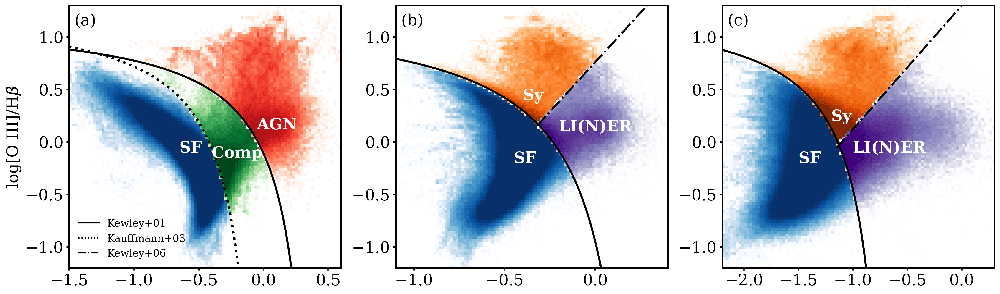
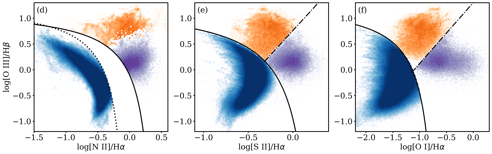
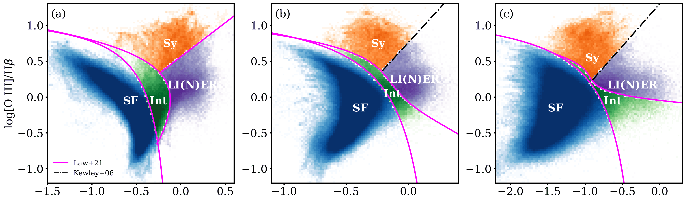
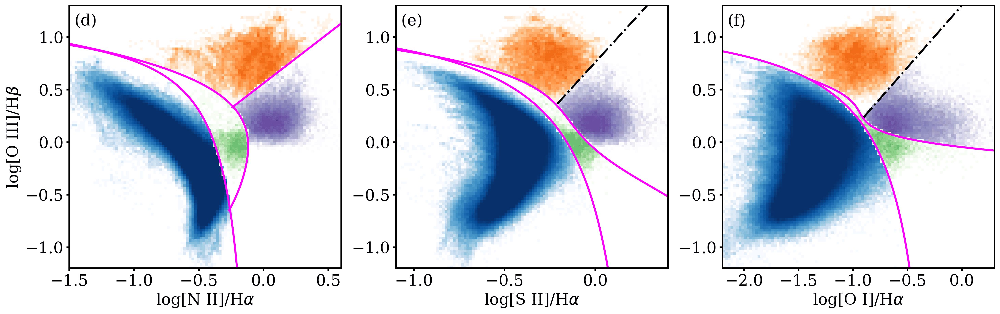
| Name | Number |
|---|---|
| Classified as SF in all BPT diagrams | 931 887 (72.4%) |
| AGN in [N II]-BPT & Sy in the other two | 24 320 (1.89%) |
| AGN in [N II]-BPT & LI(N)ERs in the other two | 38 097 (2.96%) |
| Ambiguous spaxels | 119 222 (9.27%) |
| Composite spaxels in [N II]-BPT | 173 129 (13.5 %) |
| Total number of spaxels after S/N cuts | 1 286 655 (100%) |
| Name | Number |
|---|---|
| Classified as SF in all BPT diagrams | 1 093 599 (85.0%) |
| Classified as Sy in all BPT diagrams | 17 948 (1.39%) |
| Classified as LI(N)ER in all BPT diagrams | 25 256 (1.96%) |
| Ambiguous spaxels | 146 790 (11.4%) |
| Classified as Int in all BPT diagrams | 3 062 (0.24 %) |
| Total number of spaxels after S/N cuts | 1 286 655 (100%) |
2.2.2 مجموعة الاختبار (بيانات ملتبسة)
لاختبار النموذج المدرَّب، ندرج العناصر الطيفية المكانية الملتبسة، وهي تلك غير المصنفة باتساق، ومن ثم يصعب إسنادها بصورة حاسمة إلى أي فئة محددة. وقد حدد تحليلنا ما مجموعه 119 222 من هذه العناصر. والهدف هو تقييم قدرة النموذج على تمييز وتصنيف البيانات الملتبسة التي لا تنتمي بوضوح إلى فئة واحدة، بما يوفر اختباراً صارماً لمتانته ودقته. ومن خلال تحليل كيفية تصنيف النموذج المدرَّب بـ UMAP لهذه النقاط الملتبسة، نسعى إلى اكتساب رؤى حول سلوكها وخصائصها الكامنة. ويساعد فحص توزيعها وتجميعها ضمن مخطط تصنيف النموذج على فهم خصائصها على نحو أفضل، ويمكن أن يوجه تحسينات مستقبلية.
3 اختزال الأبعاد والتجميع
3.1 اختزال الأبعاد
نستخدم خوارزمية UMAP لما تمتاز به من مرونة وكفاءة حاسوبية وقدرة على التقاط البنى العالمية. تبني UMAP رسماً عالي الأبعاد يرمز العلاقات بين نقاط البيانات، ثم تحسّن تمثيلاً منخفض الأبعاد يحافظ على البنية الأصلية. وبالمقارنة مع طرائق تقليدية مثل تحليل المكونات الرئيسية (PCA)، تتفوق UMAP في التعامل مع العلاقات غير الخطية وبنى المتشعبات المعقدة، مما يجعلها فعالة جداً في تطبيقات مثل التجميع، وتمثيل البيانات بصرياً، وخفض الضجيج.
تستند مخططات BPT إلى أربع نسب لخطوط الانبعاث—[O III] 5008/H
5008/H ، و[N II]
، و[N II] 6585/H، و[S II]
6585/H، و[S II] 6718,32/H
6718,32/H ، و[O I]
، و[O I] 6302/H
6302/H —مكوّنة فضاءً رباعي الأبعاد؛ غير أننا نعتمد عادةً على ثلاثة مخططات منفصلة، يركز كل منها على زوج من نسب خطوط الانبعاث. ولا يوفر هذا النهج إلا رؤية محدودة لفضاء المعاملات الكامل، مما قد يحجب التعقيدات الكامنة داخل البيانات. ولمعالجة ذلك، طبقنا UMAP لإسقاط هذه الأبعاد الأربعة في فضاء ثنائي الأبعاد، بما يعزز وضوح التصنيف ويكشف البنى الفرعية المخفية. ومن خلال جمع المعاملات الأربعة كلها في تمثيل 2D، تفصل UMAP بصرياً بين الفئات المتميزة وتكشف أنماطاً قد تبقى مستترة في الفضاءات الأعلى بعداً.
—مكوّنة فضاءً رباعي الأبعاد؛ غير أننا نعتمد عادةً على ثلاثة مخططات منفصلة، يركز كل منها على زوج من نسب خطوط الانبعاث. ولا يوفر هذا النهج إلا رؤية محدودة لفضاء المعاملات الكامل، مما قد يحجب التعقيدات الكامنة داخل البيانات. ولمعالجة ذلك، طبقنا UMAP لإسقاط هذه الأبعاد الأربعة في فضاء ثنائي الأبعاد، بما يعزز وضوح التصنيف ويكشف البنى الفرعية المخفية. ومن خلال جمع المعاملات الأربعة كلها في تمثيل 2D، تفصل UMAP بصرياً بين الفئات المتميزة وتكشف أنماطاً قد تبقى مستترة في الفضاءات الأعلى بعداً.
في UMAP، تؤثر ثلاثة معاملات فائقة رئيسية تأثيراً كبيراً في عملية التضمين: n_neighbors وmin_dist وn_components. يحدد المعامل n_neighbors حجم الجوار المحلي المستخدم في تقريب المتشعب. ويحدد المعامل n_neighbors عدد أقرب الجيران الذين يؤخذون في الحسبان عند تقريب بنية المتشعب. وتؤكد القيم الأصغر العلاقات المحلية، في حين تساعد القيم الأكبر على التقاط البنية العالمية للبيانات. وفي هذه الدراسة اخترنا n_neighbors = 1 000 لتحديد السمات البنيوية العالمية بفعالية. أما المعامل min_dist فيحدد المسافة الدنيا المسموح بها بين النقاط المضمنة، مؤثراً في تراصّ العناقيد وتجميعها في التضمين الناتج. وتنتج القيم الأقل لـ min_dist عناقيد محلية أكثر كثافة وتفصيلاً، بينما تؤدي القيم الأعلى إلى تضمينات أوسع وأقل كثافة. وفي هذا التحليل استخدمنا min_dist = 0.0 لتعظيم وضوح التجميع. وأخيراً، يحدد المعامل n_components بعد فضاء التضمين؛ وقد ضبطنا n_components = 2 من أجل تمثيل بصري واضح وتفسير مباشر.
لتدريب نموذج UMAP، استخدمنا نسب خطوط الانبعاث التقليدية الأربع في BPT: و و و. وتُشتق هذه النسب من خطوط انبعاث متقاربة في الطول الموجي، مما يجعلها مستقلة إلى حد كبير عن آثار الاحمرار. وقد اخترنا هذه النسب الخطية تحديداً لا بسبب رسوخ استخدامها في الأدبيات فحسب، بل أيضاً لأنها تميز بفعالية بين مصادر التأين، مقدمة فصلاً واضحاً وذا معنى فيزيائي. وبعد اختبار توليفات متعددة من خطوط الانبعاث ونسب الخطوط والمعاملات الفائقة، أعطت المجموعة المختارة من النسب الأربع باستمرار أكثر نتائج التصنيف تميزاً. ونُفذت خوارزمية UMAP باستخدام حزمة Python المسماة umap-learn (McInnes et al., 2018). وأُجري التدريب والاختبار باستخدام مجموعتي البيانات النقية والملتبسة كما هو موصوف في القسم 2.2.
3.2 التجميع
عند اكتمال مرحلة التدريب، طبقنا خوارزمية HDBSCAN (التجميع المكاني الهرمي القائم على الكثافة للتطبيقات مع الضجيج) (McInnes et al., 2017) لتجميع مجموعة البيانات التي كانت قد أُسقطت في فضاء أقل أبعاداً باستخدام نموذج UMAP. وتتميز HDBSCAN، وهي تقنية تجميع قائمة على الكثافة، بأنها لا تتطلب تحديد عدد العناقيد مسبقاً. وفي تحليلنا، ضبطنا min_samples على 10، محددين الحد الأدنى لعدد النقاط المطلوب لتشكيل منطقة كثيفة، وmin_cluster_size على 500، لضمان تصنيف العناقيد الأصغر من هذه العتبة على أنها ضجيج. ويتيح هذا النهج تحديد عناقيد ذات كثافات وأشكال متباينة مع ترشيح الضجيج بفعالية، مما يوفر مرونة ودقة أكبر في تحليل بُنى البيانات المعقدة. وتُنفذ خوارزمية HDBSCAN المستخدمة في هذا التحليل عبر حزمة Python المسماة hdbscan (McInnes et al., 2017).
4 النتائج
4.1 نتائج تدريب UMAP واختباره
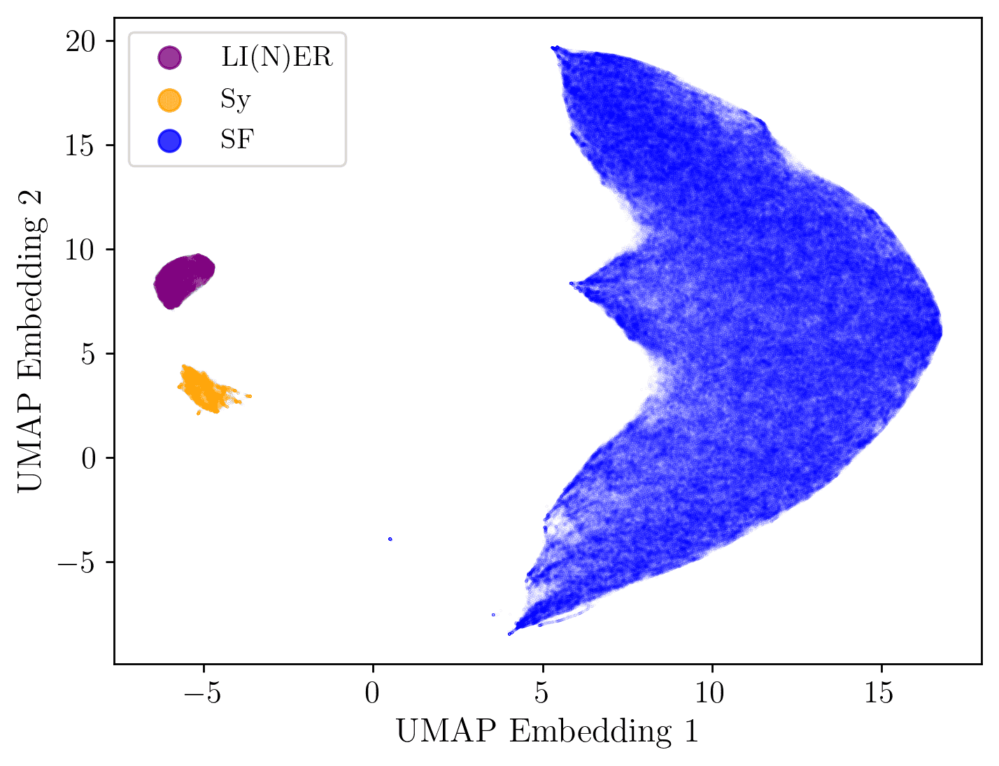
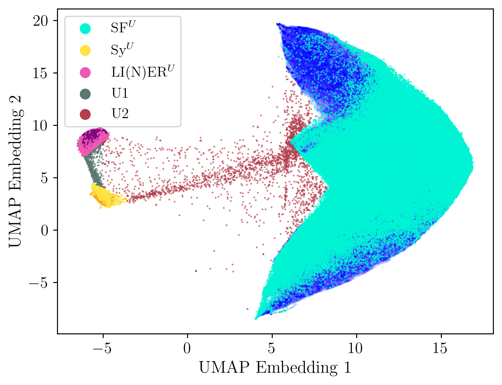
| Name | Number |
|---|---|
| SFU | 163 424 (94.4%) |
| SyU | 4 846 (2.80%) |
| LI(N)ERU | 1 789 (1.03%) |
| Unclassified 1 (U1) | 876 (0.51%) |
| Unclassified 2 (U2) | 2 194 (1.27%) |
| Total | 173 129 (100%) |
طورنا نموذج التعلم الآلي غير الخاضع للإشراف باستخدام مجموعتي التدريب والاختبار المبينتين في القسم 2.2.1. ولاختزال الأبعاد والتصنيف والتجميع، طبقنا خوارزمية UMAP إلى جانب طريقة HDBSCAN، كما هو مفصل في القسم 3. ويعرض الشكل 3، المبين في أعلى الشكل، التضمينات الثنائية الأبعاد التي ولدها نموذج UMAP المدرب على مجموعة البيانات النقية من القسم 2.2.1. وفي هذا الشكل، تمثل النقاط الزرقاء والبرتقالية والأرجوانية العناصر الطيفية المكانية من فئات SF وSy وLI(N)ER، على التوالي، كما صُنفت باتساق بواسطة مخططات BPT الثلاثة. ويبرز الفصل الواضح بين هذه الفئات، ولا سيما في الجانب العلوي من الشكل 3، قدرة النموذج على التمييز بينها بدقة.
إضافة إلى ذلك، اختبرنا النموذج باستخدام نقاط البيانات الملتبسة المعرفة في القسم 2.2.2 لفحص توزيعها داخل فضاء التضمين الثنائي الأبعاد الذي ينتجه نموذج UMAP. وتعرض اللوحة السفلية من الشكل 3 نتائج مجموعة الاختبار (العناصر الطيفية المكانية الملتبسة) مرسومة فوق مجموعة التدريب، التي تتكون من العناصر الطيفية المكانية ذات التصنيف النقي. ولمزيد من التحليل، صنفنا هذه النقاط استناداً إلى مواضعها في فضاء UMAP. وعلى وجه التحديد، تشير SFU (نقاط فيروزية)، وSyU (نقاط ذهبية)، وLI(N)ERU (نقاط وردية) إلى نقاط البيانات الملتبسة الواقعة ضمن مناطق SF وSy وLI(N)ER المعرفة سابقاً، على التوالي، بما يدل على أنها صُنفت حديثاً على أنها SF أو Sy أو LI(N)ER؛ وهي بيانات لم تكن مخططات BPT التقليدية قادرة على تمييزها.
غير أن بعض العناصر الطيفية المكانية لا تقع ضمن أي من عناقيد UMAP المعرفة مسبقاً. ولمزيد من فحص خصائصها، صنفنا هذه المجموعة غير المصنفة إلى مجموعتين فرعيتين: U1 (نقاط خضراء داكنة) وU2 (نقاط بنية). وتقع نقاط U1 أقرب إلى منطقة AGN، بينما تقع نقاط U2 بين منطقتي AGN وSF. ويلخص الجدول 5 عدد العناصر الطيفية المكانية الملتبسة المصنفة حديثاً باستخدام طريقة التصنيف المحدثة المعتمدة على UMAP. وتساعد هذه النتائج على قياس عدد العناصر الطيفية المكانية التي كانت ملتبسة سابقاً ويمكن الآن تصنيفها منهجياً.
4.2 البيانات المصنفة بـ UMAP على مخططات BPT
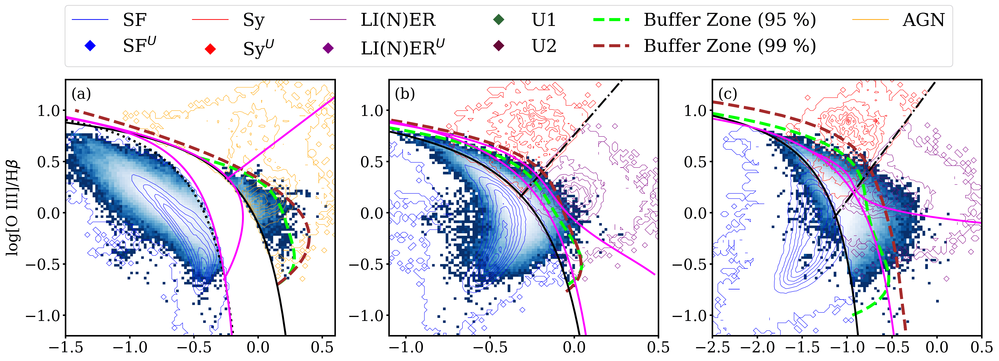
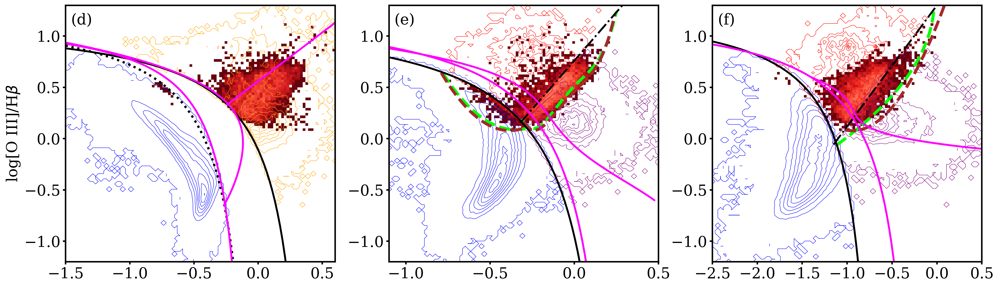
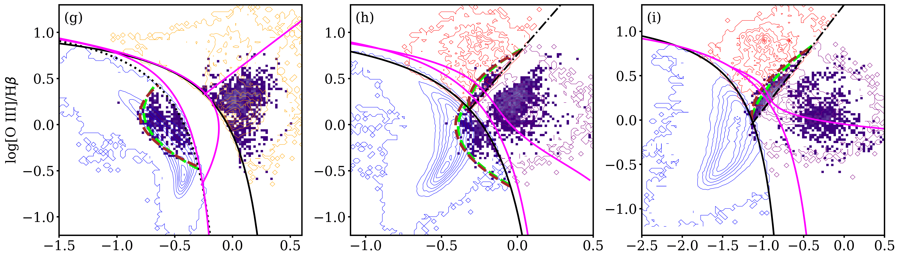
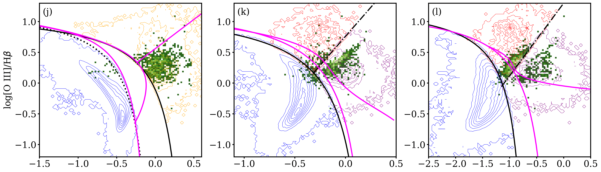
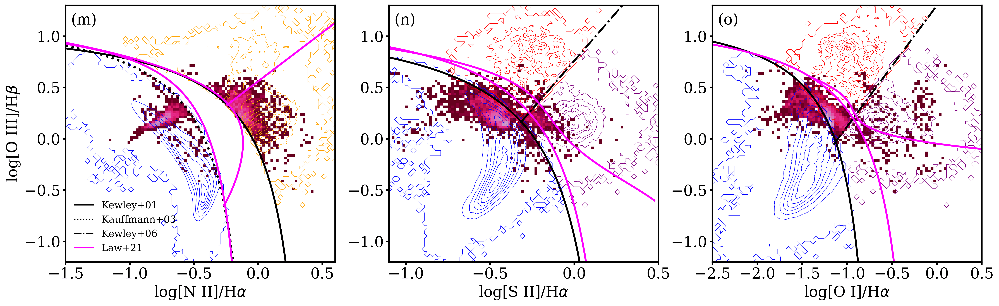
لفحص سلوك العناصر الطيفية المكانية المصنفة حديثاً بطريقة UMAP من البيانات الملتبسة سابقاً، رسمنا هذه النقاط على مخططات BPT لدراسة توزيعها بالنسبة إلى مجموعة البيانات النقية الأصلية. ويعرض الشكل 4 الفئات المصنفة بـ UMAP، وهي SFU وSyU وLI(N)ERU، إلى جانب فئتين فرعيتين غير مصنفتين هما U1 وU2. وتوفر هذه المقارنة فهماً لاختلافات التوزيع وتبرز الفروق التي أدخلتها تصنيفات UMAP المحدثة.
في الشكل 4، نلاحظ توزيعات العناصر الطيفية المكانية المصنفة بـ UMAP: SFU (أزرق)، وSyU (أحمر)، وLI(N)ERU (أرجواني). وللمقارنة مع بيانات التصنيف النقية المستمدة من مخططات BPT التقليدية، نركب هذه التوزيعات مع خطوط كنتورية على كل مخطط BPT. لاحظ أن مخطط الألوان للمدرج ثنائي الأبعاد 2D معكوس، أي إن المناطق البيضاء داخل التوزيعات تشير إلى المواضع ذات أعلى تركيز لنقاط البيانات. ويساعد هذا التمثيل البصري على إبراز التداخل والفروق بين البيانات المصنفة بـ UMAP وتصنيف BPT التقليدي.
يتضح أن الفئات المصنفة بـ UMAP، وهي SFU وSyU وLI(N)ERU، ليست محصورة بدقة داخل الحدود التي ترسمها منحنيات Kewley et al. (2006) وKauffmann et al. (2003). فعبر مخططات BPT كلها، نلاحظ أن الفواصل السابقة تُتجاوز، إذ تظهر بعض العناصر الطيفية المكانية في مناطق مخصصة لفئات أخرى. وتؤكد هذه المفارقة أن منحنيات الفصل الحالية لا تصنف كل الأطياف المرصودة باتساق. وباستخدام مخطط تصنيف UMAP مدرب على العناصر الطيفية المكانية “النقية” لتصنيف أطياف ذات تصنيف ملتبس، نحصل على منظور مكمل لطبيعتها. ويشير ذلك إلى أن مقاربات التعلم الآلي مثل UMAP يمكن أن تكون أداة مفيدة لتحسين تقنيات التصنيف الحالية. وبالنسبة إلى العناصر الطيفية المكانية الواقعة خارج حدودها المعرفة سابقاً، نقدم منحنيات متقطعة ليمونية وبنية للدلالة على المناطق العازلة المعرفة حديثاً التي تحيط بـ 95% و99% من العناصر الطيفية المكانية، على التوالي، مقاسة إلى الخارج من منحنيات الفصل المحددة مسبقاً. وتساعد هذه المنحنيات على تصور توزيع العناصر الطيفية المكانية وتركيزها بالنسبة إلى الحدود الأصلية. ويرد وصف مفصل لمعادلات الحدود وتنفيذها في الملحق A.
تُشتق الحدود الناتجة من فضاء تصنيف UMAP متعدد الأبعاد لا من إسقاطات BPT الثنائية الأبعاد 2D وحدها، ومن ثم فهي تعكس الانتشار الإحصائي لأطياف ذات خصائص متشابهة بدلاً من إزاحة أفقية أو عمودية بسيطة لخطوط الفصل التقليدية. ومن اللافت أن المناطق العازلة للعناصر الطيفية المكانية من فئة SFU، ولا سيما في مخططي [S II]- و[O I]-BPT، تُظهر توافقاً جزئياً مع منحنيات Law et al. (2021)، مما يشير إلى أن النهجين يلتقطان اتجاهاً مشابهاً عند انتقال SF–AGN. وبالنسبة إلى فئتي SyU وLI(N)ERU، تكشف المناطق العازلة انتقالاً أكثر سلاسة بدلاً من فصل حاد، بما يتسق مع اختلاط فيزيائي لظروف التأين بدلاً من إزاحة ثابتة. وهذا يؤكد الدور المكمل للتصنيف القائم على UMAP، إذ يوفر مقياساً كمياً لعدم اليقين والتداخل في فضاء المعاملات الطيفية.
يوضح الشكل 4 أيضاً توزيع البيانات غير المصنفة بواسطة نموذج UMAP عبر مخططات BPT. وتمثل اللوحات العلوية فئة U1 التي، رغم عدم تصنيفها، تقع قرب عناقيد AGN في أسفل الشكل 3. وتعرض هذه العناصر الطيفية المكانية خصائص من Sy وLI(N)ER معاً. تقع معظم نقاط U1 ضمن منطقة AGN في مخطط [N II]-BPT، لكنها في مخططي [S II]- و[O I]-BPT تشغل في الغالب منطقتي Sy وLI(N)ER، على التوالي. وتعرض اللوحات السفلية فئة U2، وهي غير مصنفة أيضاً لكنها تقع بين منطقتي AGN وSF. وتتوزع نقاط U2 على نطاق أوسع عبر مخططات BPT؛ ففي حين تقع أغلبيتها في منطقة AGN في مخطط [N II]-BPT، تقع معظم النقاط ضمن منطقة SF في مخطط [S II]-BPT. أما التوزيع في مخطط [O I]-BPT فهو أصعب تفسيراً. ويبرز ذلك تعقيد تصنيف مثل هذه البيانات باستخدام منحنيات الفصل التقليدية، مؤكداً حدود مخططات التصنيف السابقة.
4.3 تعزيز التصنيف واكتساب رؤى أعمق عبر خصائص إضافية
كما هو مبين في الجدول 1، أبرز تحليلنا الإحصائي أيضاً عدم اتساق في تشخيصات BPT التقليدية عبر المخططات الثلاثة، مما يؤدي أحياناً إلى تصنيفات خاطئة. ونبين أن UMAP يمكن أن يعالج هذه الحدود وأن يكون مكملاً قيماً لتصنيف مخططات BPT. ويتيح إدماج خصائص فيزيائية إضافية فهماً أعمق للعناصر الطيفية المكانية، ولا سيما ذات التصنيفات الملتبسة. وقد اتبعت دراسات سابقة نهجاً مشابهاً بإدخال شدات خطوط الانبعاث (مثلاً، تدفق H ؛ D’Agostino et al., 2019) والمعلومات الحركية (مثلاً، تشتت سرعة H
؛ D’Agostino et al., 2019) والمعلومات الحركية (مثلاً، تشتت سرعة H ؛ Law et al., 2021; Johnston et al., 2023) لتنقيح التمييز بين مصادر التأين المختلفة. وانطلاقاً من هذا المسار، نهدف إلى تطبيق تشخيصات مماثلة على العناصر الطيفية المكانية الملتبسة المصنفة حديثاً من أجل فحص طبيعتها الفيزيائية وكشف أنماط في سلوكها المكاني والطيفي.
؛ Law et al., 2021; Johnston et al., 2023) لتنقيح التمييز بين مصادر التأين المختلفة. وانطلاقاً من هذا المسار، نهدف إلى تطبيق تشخيصات مماثلة على العناصر الطيفية المكانية الملتبسة المصنفة حديثاً من أجل فحص طبيعتها الفيزيائية وكشف أنماط في سلوكها المكاني والطيفي.
حتى باستخدام نسب خطوط الانبعاث الأربع في BPT فقط، اكتسبنا رؤى قيمة عبر تطبيق خوارزمية UMAP، التي ساعدت على كشف أنماط وتصنيفات ذات معنى ضمن العناصر الطيفية المكانية. وبإدماج معاملات إضافية، مثل المعلومات المكانية والحركية كتشتت سرعة خطوط الانبعاث، واللمعانات الذاتية (Johnston et al., 2023)، يمكننا تحسين هذا التحليل أكثر. وتوفر هذه الخصائص الإضافية فهماً أشمل وأكثر تفصيلاً للعناصر الطيفية المكانية. ولتصور هذه التحسينات، أدرجنا معاملات جديدة في العناصر الطيفية المكانية المصنفة بـ UMAP وأنشأنا رسوماً ملوّنة وفق القيم. ولضمان متانة النتائج، استبعدنا أقصى 5 من البيانات عند الطرفين الأدنى والأعلى للحد من تأثير القيم الشاذة.
من البيانات عند الطرفين الأدنى والأعلى للحد من تأثير القيم الشاذة.
4.3.1 نصف القطر الإهليلجي المطبع
نوصّف السلوك الشعاعي للعناصر الطيفية المكانية باستخدام نصف القطر الإهليلجي المطبع (المعامل spx_ellcoo_Reff الذي توفره MaNGA)، والذي يعبر عن المسافة عن مركز المجرة بوحدات نصف القطر الفعال. ويعرض الشكل 5 رسوماً ملوّنة وفق القيم استناداً إلى نصف القطر الإهليلجي المطبع لعناقيد SFU وLI(N)ERU على مخططات BPT. ولتحسين الوضوح وتقليل أثر القيم الشاذة، استبعدنا أولاً 5% الخارجية من العناصر الطيفية المكانية بناءً على توزيعات خصائصها. ثم طبقنا تجميعاً مكانياً 2D وأسندنا إلى كل صندوق لوناً يقابل الوسيط لنصف القطر الإهليلجي المطبع للعناصر الطيفية المكانية التي يحتويها.
بالنسبة إلى عنقود SFU (الصف العلوي)، يظهر تدرج شعاعي واضح في مخطط [N II]-BPT: فإن العناصر الطيفية المكانية الواقعة في جانب AGN تقع أقرب إلى مركز المجرة (أكثر زرقة)، بينما تكون تلك الموجودة في منطقة SF أكثر امتداداً. وعلى النقيض، ينعكس الاتجاه في مخطط [O I]-BPT، حيث تكون العناصر الطيفية المكانية في جانب SF أكثر مركزية. ولا يظهر اتجاه مميز في مخطط [S II]-BPT.
يكشف الشكل 5 (الصف الثالث) عن ثنائية ملحوظة داخل جمهرة LI(N)ERU في مخطط [N II]-BPT: إذ تقع بعض العناصر الطيفية المكانية في جانب SF من خط الفصل (وهي غالباً LIERs)، بينما تقع أخرى داخل منطقة AGN (وهي غالباً LINERs). ويدعم هذا التمييز ضيق عروض خطوط H (الشكل 6) وانخفاض لمعانات [O III] (الشكل 7) في المجموعة الأولى. ومع أن LIERs وLINERs تتداخلان إلى حد كبير في مخطط [S II]-BPT، فإن مخطط [O I]-BPT يُظهر فصلاً أولياً، إذ تشغل LIERs مناطق ذات نسب أعلى من [O I]/H
(الشكل 6) وانخفاض لمعانات [O III] (الشكل 7) في المجموعة الأولى. ومع أن LIERs وLINERs تتداخلان إلى حد كبير في مخطط [S II]-BPT، فإن مخطط [O I]-BPT يُظهر فصلاً أولياً، إذ تشغل LIERs مناطق ذات نسب أعلى من [O I]/H . وتشير هذه الاتجاهات إلى أن مخطط [N II]-BPT، ولا سيما عند دمجه مع المعلومات الحركية والمكانية، قد يوفر طريقة مفيدة للتمييز بين LIERs وLINERs.
. وتشير هذه الاتجاهات إلى أن مخطط [N II]-BPT، ولا سيما عند دمجه مع المعلومات الحركية والمكانية، قد يوفر طريقة مفيدة للتمييز بين LIERs وLINERs.
لا تُظهر عناقيد SyU وU1 (الصفان الثاني والرابع) اتجاهات شعاعية واضحة عبر أي من مخططات BPT، مما يشير إلى أن هذه المجموعات قد تكون أكثر اختلاطاً في أصلها الفيزيائي أو غير منظمة شعاعياً بقوة.
بالنسبة إلى عنقود U2 (الصف السفلي)، يظهر تدرج شعاعي في مخطط [N II]-BPT، حيث تكون العناصر الطيفية المكانية الموجودة في منطقة AGN أكثر مركزية قليلاً من تلك الواقعة في جانب SF. وعلى وجه الخصوص، يُظهر مخطط [O I]-BPT (اللوحة (o)) انحرافاً يرجح أنه ناتج من استخدام خط الفصل الأقدم لـ [O I] من Kewley et al. . ومن شأن تطبيق الحد المنقح من Law et al. (2021) أن يصنف أغلبية هذه العناصر الطيفية المكانية على أنها SF، مما يجعل النتائج في توافق واضح مع مخططي [N II]- و[S II]-BPT.
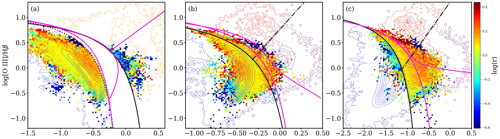
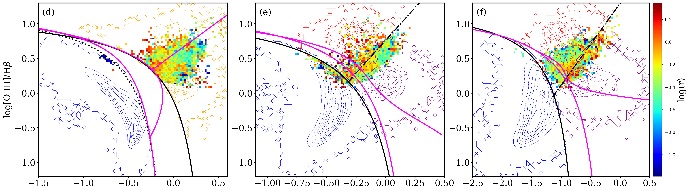
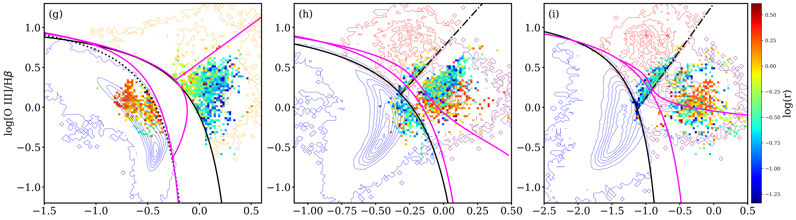
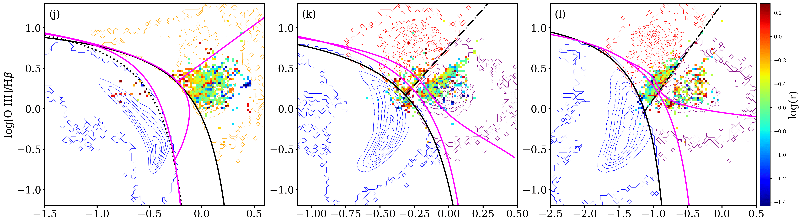
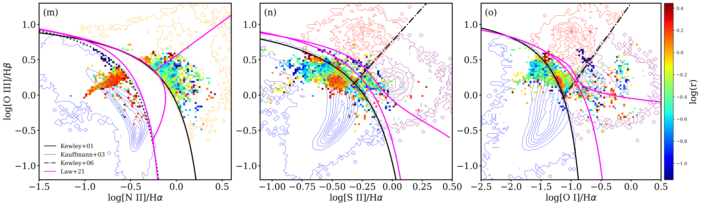
4.3.2 تشتت سرعة H
يعرض الشكل 6 مخططات BPT ملوّنة وفق القيم للعناقيد الخمسة المصنفة بـ UMAP—SFU وSyU وLI(N)ERU وU1 وU2—حيث يُلوَّن كل صندوق 2D وفق الوسيط لتشتت سرعة خط انبعاث H بمقياس لوغاريتمي. وتقدم هذه الخرائط رؤية في البنية الحركية للغاز المؤيَّن، التي تعكس عمليات طاقية كامنة مثل التدفقات الخارجة المدفوعة بـ AGN، وتغذية المستعرات العظمى الراجعة، والرياح المجرية، والصدمات. ومع أن نشاط AGN والنشاط النجمي الانفجاري يمكن أن يؤثرا كلاهما في تشتتات السرعة، فإن الصدمات مهمة بوجه خاص في سياق انبعاث LI(N)ER، ومعروف أنها توسع ملامح الخطوط بدرجة كبيرة. لذلك يمكن أن يكون تشتت السرعة مؤشراً مفيداً، وإن كان غير مباشر، على التأين الذي تهيمن عليه الصدمات (مثلاً، Rich et al., 2011; Belfiore et al., 2016).
بمقياس لوغاريتمي. وتقدم هذه الخرائط رؤية في البنية الحركية للغاز المؤيَّن، التي تعكس عمليات طاقية كامنة مثل التدفقات الخارجة المدفوعة بـ AGN، وتغذية المستعرات العظمى الراجعة، والرياح المجرية، والصدمات. ومع أن نشاط AGN والنشاط النجمي الانفجاري يمكن أن يؤثرا كلاهما في تشتتات السرعة، فإن الصدمات مهمة بوجه خاص في سياق انبعاث LI(N)ER، ومعروف أنها توسع ملامح الخطوط بدرجة كبيرة. لذلك يمكن أن يكون تشتت السرعة مؤشراً مفيداً، وإن كان غير مباشر، على التأين الذي تهيمن عليه الصدمات (مثلاً، Rich et al., 2011; Belfiore et al., 2016).
بالنسبة إلى عنقود SFU (الصف العلوي)، تُظهر العناصر الطيفية المكانية عموماً تشتتات سرعة أقل نسبياً عبر مخططات BPT الثلاثة كلها، بما يتسق مع المتوقع لمناطق SF. ومن اللافت أن تشتت السرعة يزداد قليلاً باتجاه حد AGN، ولا سيما في مخطط [N II]، بينما تظهر بعض العناصر الطيفية المكانية ذات الأعلى في جانب SF في مخططي [S II]- و[O I]-BPT، مما يلمح إلى إسهام محتمل من عمليات غير حرارية قرب تلك الحدود.
يُظهر عنقود LI(N)ERU (الصف الثالث) ثنائية داخلية، أوضح ما تكون في مخطط [N II]-BPT: تقع بعض العناصر الطيفية المكانية في جانب SF بتشتتات أقل نسبياً ( 2.0)، بينما تقع أخرى بوضوح داخل منطقة AGN وتعرض خطوط H أعرض بكثير ( 2.0). ويتسق هذا الانقسام مع أعمال سابقة تبين أن زيادة تشتت السرعة كثيراً ما تشير إلى تأين تهيمن عليه الصدمات أو إلى نشاط AGN ضعيف (مثلاً، Rich et al., 2011, 2014). وبناء على ذلك، يرجح أن يرتبط الفرع منخفض التشتت بانبعاث LIER ممتد تغذيه تجمعات نجمية متطورة، بينما يتوافق الفرع عالي التشتت أكثر مع إثارة نووية شبيهة بـ LINER. ومع أن هذه الثنائية تصبح أقل وضوحاً في مخطط [S II]-BPT، فإن مخطط [O I]-BPT يواصل كشف تدرج في التشتت داخل LI(N)ERU، معززاً الرأي بأن الصدمات أو AGN منخفض المستوى تسهم في الانبعاث المرصود.
أعرض بكثير ( 2.0). ويتسق هذا الانقسام مع أعمال سابقة تبين أن زيادة تشتت السرعة كثيراً ما تشير إلى تأين تهيمن عليه الصدمات أو إلى نشاط AGN ضعيف (مثلاً، Rich et al., 2011, 2014). وبناء على ذلك، يرجح أن يرتبط الفرع منخفض التشتت بانبعاث LIER ممتد تغذيه تجمعات نجمية متطورة، بينما يتوافق الفرع عالي التشتت أكثر مع إثارة نووية شبيهة بـ LINER. ومع أن هذه الثنائية تصبح أقل وضوحاً في مخطط [S II]-BPT، فإن مخطط [O I]-BPT يواصل كشف تدرج في التشتت داخل LI(N)ERU، معززاً الرأي بأن الصدمات أو AGN منخفض المستوى تسهم في الانبعاث المرصود.
بالنسبة إلى عنقودي SyU وU1 (الصفان الثاني والرابع)، لا تظهر أنماط قوية أو متماسكة في تشتت سرعة H عبر معظم مخططات BPT، مما يشير إلى بنى حركية غير متجانسة نسبياً. غير أنه بالنسبة إلى عنقود SyU في مخطط [N II]-BPT، يظهر تدرج يزداد فيه تشتت السرعة على امتداد نسبة [N II]/H
عبر معظم مخططات BPT، مما يشير إلى بنى حركية غير متجانسة نسبياً. غير أنه بالنسبة إلى عنقود SyU في مخطط [N II]-BPT، يظهر تدرج يزداد فيه تشتت السرعة على امتداد نسبة [N II]/H .
.
وعلى النقيض، يعرض عنقود U2 (الصف السفلي) تدرجاً ملحوظاً في تشتت السرعة، ولا سيما في مخطط [N II]-BPT: إذ تُظهر العناصر الطيفية المكانية الواقعة في جانب SF تشتتات H أقل، بينما تُظهر تلك الممتدة إلى منطقة AGN ملامح أعرض بكثير. ويصبح هذا التدرج أقل وضوحاً في مخططي [S II]- و[O I]-BPT؛ وبدلاً من ذلك، تبدو العناصر الطيفية المكانية ذات تشتتات سرعة H
أقل، بينما تُظهر تلك الممتدة إلى منطقة AGN ملامح أعرض بكثير. ويصبح هذا التدرج أقل وضوحاً في مخططي [S II]- و[O I]-BPT؛ وبدلاً من ذلك، تبدو العناصر الطيفية المكانية ذات تشتتات سرعة H الضيقة متجمعة قرب المنطقة المركزية لتوزيع U2. وقد يشير السلوك المكاني والحركي لـ U2 إلى جمهرة انتقالية متأثرة بكل من تكوّن النجوم والعمليات المرتبطة بـ AGN، ما يستدعي مزيداً من التحقيق في آليات تأينها.
الضيقة متجمعة قرب المنطقة المركزية لتوزيع U2. وقد يشير السلوك المكاني والحركي لـ U2 إلى جمهرة انتقالية متأثرة بكل من تكوّن النجوم والعمليات المرتبطة بـ AGN، ما يستدعي مزيداً من التحقيق في آليات تأينها.
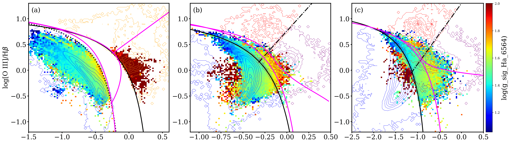
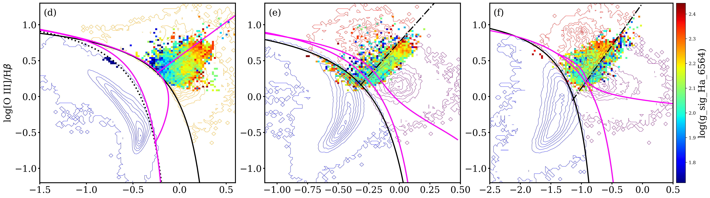
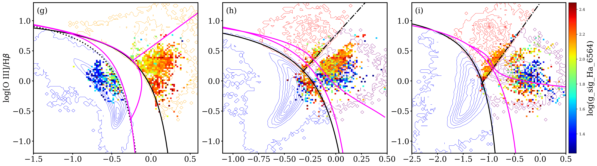
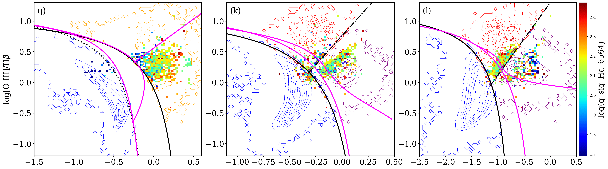
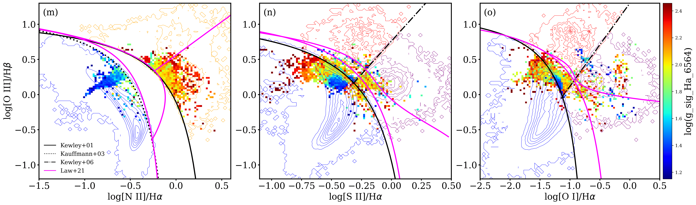
 للفئات الخمس المصنفة بـ UMAP: SFU (الصف العلوي)، وSyU (الصف الثاني)، وLI(N)ERU (الصف الثالث)، وU1 (الصف الرابع)، وU2 (الصف السفلي).
للفئات الخمس المصنفة بـ UMAP: SFU (الصف العلوي)، وSyU (الصف الثاني)، وLI(N)ERU (الصف الثالث)، وU1 (الصف الرابع)، وU2 (الصف السفلي).4.3.3 لمعان [O III]
يعرض الشكل 7 رسوماً ملوّنة وفق القيم تستند إلى اللمعان الذاتي لخط انبعاث [O III] لعناقيد SFU وSyU وLI(N)ERU وU1 وU2. ويعمل لمعان [O III] تشخيصاً مهماً لعمليات التأين الطاقية، إذ كثيراً ما يرتبط بنشاط AGN بسبب جهد تأينه العالي، لكنه قد يرتفع أيضاً في مناطق تكوّن النجوم منخفضة الفلزية. ومن ثم يمكن أن ينشأ لمعان [O III] العالي من سيناريوهات فيزيائية متميزة: إما تأين ضوئي قوي مدفوع بـ AGN (مثلاً، Kauffmann et al., 2003; LaMassa et al., 2010)، أو تكوّن نجوم شديد وفقير بالمعادن (مثلاً، Arata et al., 2020).
بالنسبة إلى عنقود SFU (الصف العلوي)، يُظهر مخطط [N II]-BPT تدرجاً لونياً قوياً على امتداد محور [O III]/H : إذ تميل العناصر الطيفية المكانية ذات نسب [O III]/H
: إذ تميل العناصر الطيفية المكانية ذات نسب [O III]/H الأعلى إلى إظهار لمعان [O III] أقوى. ويعزز هذا الاتجاه التفسير المزدوج القائل إن انبعاث [O III] العالي قد ينشأ من مناطق SF منخفضة الفلزية ومن تلوث AGN قرب الحد معاً. وتُظهر العناصر الطيفية المكانية في جانب SF تشتتاً واسعاً في اللمعان، في حين أن تلك الممتدة إلى جانب AGN تكون ذات لمعان عالٍ بصورة أكثر اتساقاً، بما يرجح انعكاس نشاط AGN؛ غير أن هذه العناصر الطيفية المكانية لا تُحدد بوضوح في مخططي [S II]- و[O I]-BPT.
الأعلى إلى إظهار لمعان [O III] أقوى. ويعزز هذا الاتجاه التفسير المزدوج القائل إن انبعاث [O III] العالي قد ينشأ من مناطق SF منخفضة الفلزية ومن تلوث AGN قرب الحد معاً. وتُظهر العناصر الطيفية المكانية في جانب SF تشتتاً واسعاً في اللمعان، في حين أن تلك الممتدة إلى جانب AGN تكون ذات لمعان عالٍ بصورة أكثر اتساقاً، بما يرجح انعكاس نشاط AGN؛ غير أن هذه العناصر الطيفية المكانية لا تُحدد بوضوح في مخططي [S II]- و[O I]-BPT.
بالنسبة إلى عنقود SyU (الصف الثاني)، تقع معظم العناصر الطيفية المكانية ضمن المناطق المخصصة لـ AGN في المخططات الثلاثة كلها، وتميل إلى إظهار لمعان [O III] أشد، مع مدى لوني أضيق نسبياً مما في SFU. ويظهر أيضاً تدرج محتمل يمتد بعيداً عن خطوط فصل SF.
في المقابل، تُظهر العناصر الطيفية المكانية من فئة LI(N)ERU (الصف الثالث) سلوكاً أكثر تدرجاً وتعقيداً. ففي مخطط [N II]-BPT، تبدو الجمهرة منقسمة إلى فرعين: تظهر مجموعة لمعانات [O III] أقل نسبياً وتشغل جانب SF (مرتبطة مبدئياً بـ LIERs)، بينما تظهر مجموعة أخرى في جانب AGN (قد تكون LINERs) لمعانات [O III] مرتفعة باعتدال. وتتسق هذه الثنائية مع ما لوحظ في الشكلين 5 و6، مما يعزز فائدة [N II]-BPT في التمييز بين جمهورتي LIER وLINER. ويصبح التمييز ضبابياً في مخطط [S II]-BPT، حيث تتداخل المجموعتان. غير أن LINERs تبدو في مخطط [O I]-BPT (اللوحة i) أكثر تركّزاً في مناطق ذات [O I]/H مرتفع، مقدمة دعماً أولياً لفصل ممكن في هذا المستوى أيضاً.
مرتفع، مقدمة دعماً أولياً لفصل ممكن في هذا المستوى أيضاً.
بالنسبة إلى عنقودي U1 وU2 (الصفان السفليان)، لا تظهر اتجاهات قوية أو متسقة في لمعان [O III]. ويبدو U1 (الصف الرابع) موزعاً بانتظام أكبر وبلمعانات [O III] أخفض عموماً، مما يشير إلى ظروف تأين أضعف أو أصل فيزيائي أكثر تغايراً. وفي المقابل، يُظهر U2 (الصف السفلي) تدرجاً خفيفاً في لمعان [O III] عبر مخططات BPT الثلاثة كلها، ولا سيما أنه يشبه الاتجاه المرصود في عنقود LI(N)ERU. ويدعم هذا السلوك تفسير U2 بوصفه يتكون من العناصر الطيفية المكانية انتقالية تمتد عبر الحد بين مناطق التأين التي تهيمن عليها SF وتلك التي يهيمن عليها AGN.
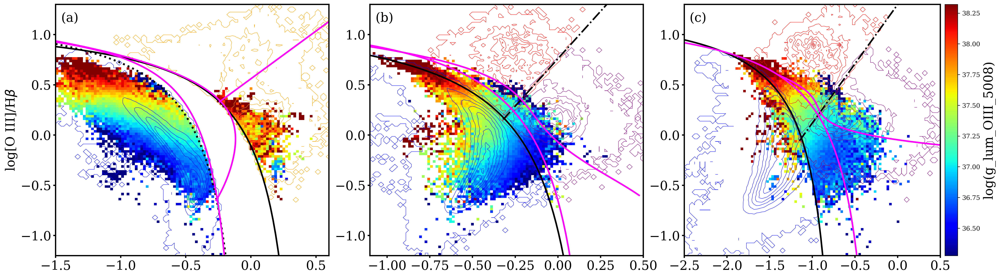
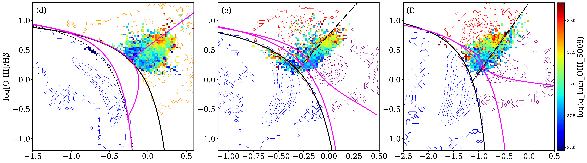
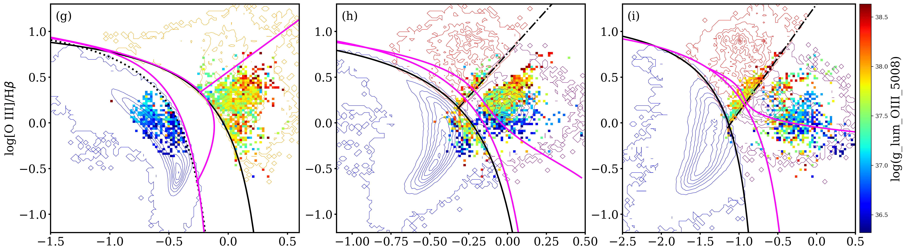
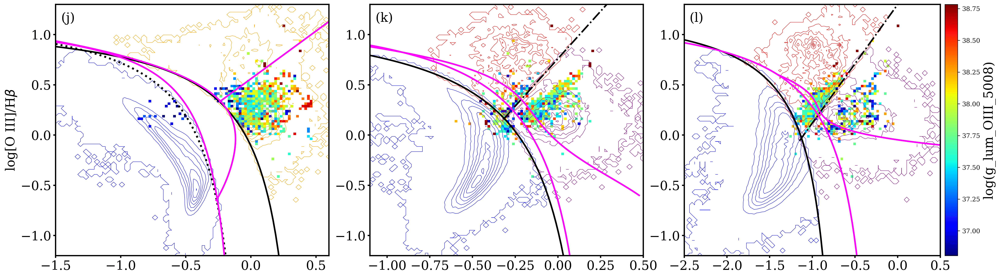
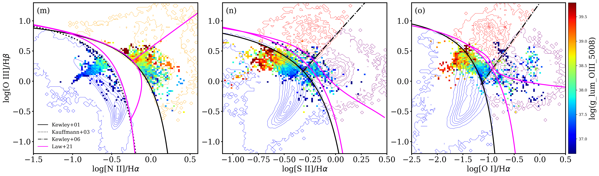
5 المناقشة
في القسم 4، قدمنا نتائج نموذج UMAP للعناصر الطيفية المكانية الملتبسة ومواضعها على مخططات BPT التقليدية، مبينين أن UMAP يستطيع بنجاح تصنيف مناطق قد تُصنّف خطأً أو تُغفلها الطرائق التقليدية. وبإدماج معاملات رصدية إضافية، مثل نصف القطر الإهليلجي المطبع، وتشتتات السرعة، ولمعان [O III]، أظهرنا أن هذه العوامل تساعد أيضاً في التصنيف. ولا تعزز هذه الطريقة التصنيف فحسب، بل تتيح كذلك دراسة العناصر الطيفية المكانية فردية ذات خصائص فريدة، مقدمة رؤى أعمق في سماتها. ويوفر إدراج الخصائص الإضافية فهماً أشمل لهذه العناصر الطيفية المكانية ويفتح فرصاً جديدة لدراسات حالة مفصلة.
5.1 دراسات حالة فردية وإدماج خصائص إضافية في نموذج UMAP
استناداً إلى دراستنا في القسم 4، حددنا مجموعتين فرعيتين مثيرتين للاهتمام تقترحان تحقيقاً إضافياً لاكتساب رؤى أعمق في العناصر الطيفية المكانية المصنفة حديثاً.
(i) العناصر الطيفية المكانية من فئة SFU تقع في منطقة AGN من مخطط [N II]-BPT: يبيّن الشكل 8 العناصر الطيفية المكانية من فئة SFU تقع في جانب AGN من مخطط [N II]-BPT بينما تبقى ضمن موضع SF أو قربه في مخططي [S II]- و[O I]-BPT، بما يتسق مع التداخل المعروف في الأنظمة المركبة. وتمتد تشتتات سرعة H فيها عبر
فيها عبر  100–300 ، ويظهر نمط متماسك: فالخطوط الأعرض أكثر شيوعاً عند أنصاف أقطار أكبر ()، وتميل إلى الوقوع أعمق داخل منطقة SF في مخطط [S II]-BPT، بينما تُظهر العناصر الطيفية المكانية الأقرب إلى المركز () عادةً تشتتات أقل () وتشغل مناطق عازلة عبر المخططات الثلاثة كلها. وتقع لمعانات [O III] في المجال
100–300 ، ويظهر نمط متماسك: فالخطوط الأعرض أكثر شيوعاً عند أنصاف أقطار أكبر ()، وتميل إلى الوقوع أعمق داخل منطقة SF في مخطط [S II]-BPT، بينما تُظهر العناصر الطيفية المكانية الأقرب إلى المركز () عادةً تشتتات أقل () وتشغل مناطق عازلة عبر المخططات الثلاثة كلها. وتقع لمعانات [O III] في المجال  – erg s-1.
– erg s-1.
يشير اجتماع خطوط H العريضة والمواضع البعيدة عن النواة إلى أن التأثير المباشر لـ AGN ليس مطلوباً لهذه العناصر الطيفية المكانية. وبدلاً من ذلك، تتسق التشتتات المرتفعة مع إثارة الصدمات أو الاضطراب المرتبط بالتفاعلات/الاندماجات (مثلاً، Rich et al., 2011, 2014). وبالفعل، ينشأ جزء فرعي من نظام اندماجي يحمل MaNGA ID 1-614567؛ وترد تفاصيل إضافية في الملحق B.
العريضة والمواضع البعيدة عن النواة إلى أن التأثير المباشر لـ AGN ليس مطلوباً لهذه العناصر الطيفية المكانية. وبدلاً من ذلك، تتسق التشتتات المرتفعة مع إثارة الصدمات أو الاضطراب المرتبط بالتفاعلات/الاندماجات (مثلاً، Rich et al., 2011, 2014). وبالفعل، ينشأ جزء فرعي من نظام اندماجي يحمل MaNGA ID 1-614567؛ وترد تفاصيل إضافية في الملحق B.
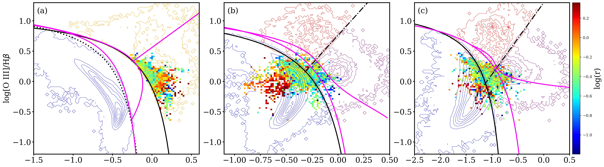
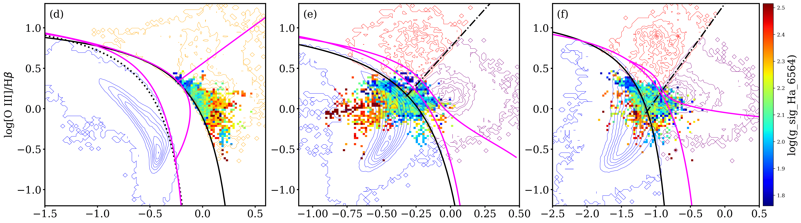
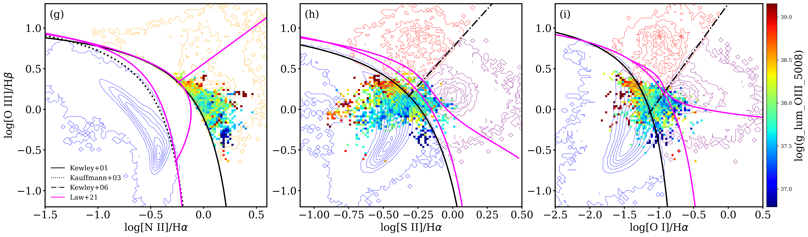
 (الوسط)، ولمعان [O III] (أسفل) للعناصر الطيفية المكانية من فئة SFU في AGN.
(الوسط)، ولمعان [O III] (أسفل) للعناصر الطيفية المكانية من فئة SFU في AGN.(ii) العناصر الطيفية المكانية من فئة LI(N)ERU مصنفة على أنها SF بواسطة مخطط [N II]-BPT: يعرض الشكل 9 المجموعة الفرعية LI(N)ERU التي يضعها مخطط [N II]-BPT في جانب SF. وتوجد هذه العناصر الطيفية المكانية في الغالب عند مسافات كبيرة عن مركز المجرة ( 1–3
1–3  )، وتُظهر خطوط H
)، وتُظهر خطوط H ضيقة (عادةً 10–50
ضيقة (عادةً 10–50  )، ولها لمعانات [O III] مقدارها – erg s-1. وتجادل أنصاف أقطارها الممتدة وعروض خطوطها الضيقة ضد التدفقات الخارجة أو الصدمات القوية، وتتوافق بدلاً من ذلك مع التأين بواسطة تجمعات نجمية متطورة ساخنة منخفضة الكتلة (HOLMES)، كما يُستدل عادةً لانبعاث LIER الممتد (Cid Fernandes et al., 2011; Belfiore et al., 2016). لذلك تُفسَّر هذه العناصر الطيفية المكانية على نحو طبيعي أكثر بوصفها LIERs لا LINERs نووية.
)، ولها لمعانات [O III] مقدارها – erg s-1. وتجادل أنصاف أقطارها الممتدة وعروض خطوطها الضيقة ضد التدفقات الخارجة أو الصدمات القوية، وتتوافق بدلاً من ذلك مع التأين بواسطة تجمعات نجمية متطورة ساخنة منخفضة الكتلة (HOLMES)، كما يُستدل عادةً لانبعاث LIER الممتد (Cid Fernandes et al., 2011; Belfiore et al., 2016). لذلك تُفسَّر هذه العناصر الطيفية المكانية على نحو طبيعي أكثر بوصفها LIERs لا LINERs نووية.
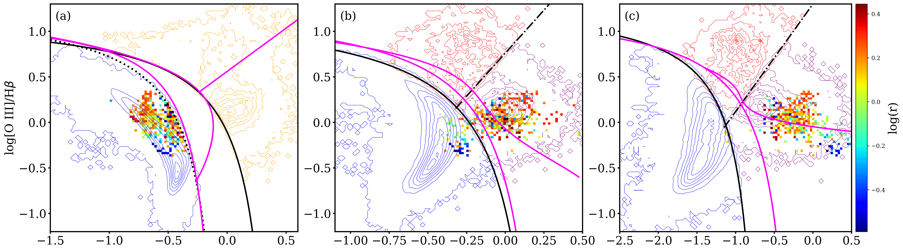
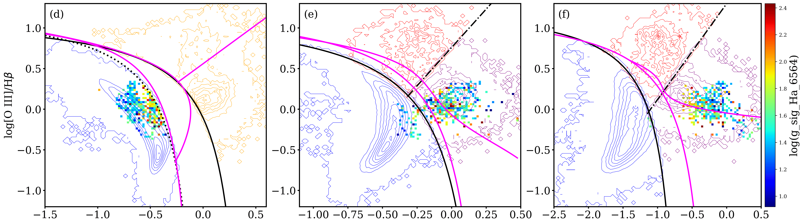
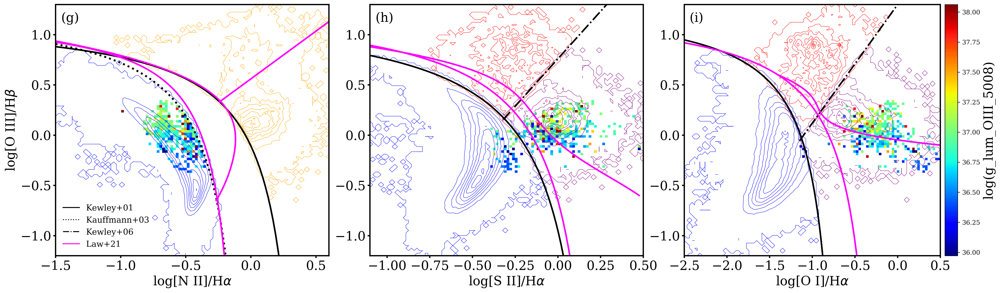
 (الوسط)، ولمعان [O III] (أسفل) للعناصر الطيفية المكانية من فئة LI(N)ERU في SF.
(الوسط)، ولمعان [O III] (أسفل) للعناصر الطيفية المكانية من فئة LI(N)ERU في SF.تشير دراسات الحالة هذه إلى أن معاملات مثل تشتت السرعة، ونصف القطر عن مركز المجرة، ولمعان [O III] تضيف سياقاً معلوماتياً إلى مواضع BPT ويمكن إدماجها في خطوة اختزال الأبعاد. وقد تكون تشخيصات إضافية ذات قيمة أيضاً؛ فعلى سبيل المثال، استُخدمت نسبة [O III]/[O II] لفصل حالات التأين على مقاييس دون الكيلو فرسخ (مثلاً، Kraemer et al., 2008). وسيكون توسيع مجموعة السمات وإعادة تدريب/اختبار UMAP بهذه الخصائص محور العمل المستقبلي.
5.2 العناصر الطيفية المكانية المركبة
مع أن دراسة مفصلة للعناصر الطيفية المكانية المركبة ستُعرض في ورقة لاحقة، فقد طبقنا أيضاً نموذج UMAP المدرَّب نفسه على العناصر الطيفية المكانية المركبة لاستكشاف سلوكها في فضاء UMAP.
يُظهر الشكل 10 تضمينات UMAP للعناصر الطيفية المكانية المركبة. وفي هذا الشكل، تمثل النقاط الزرقاء والبرتقالية والأرجوانية العناصر الطيفية المكانية من فئات SF وSy وLI(N)ER، على التوالي، مع تركيب مجموعة الاختبار (العناصر الطيفية المكانية المركبة) على مجموعة التدريب، في تناظر مع الصيغة المبينة في الشكل 3.
ولتوسيع التحليل، أسندنا تصنيفات إلى العناصر الطيفية المكانية المركبة المركبة على الرسم استناداً إلى مواضعها داخل فضاء UMAP. وكما في الشكل 3، تشير النقاط الفيروزية (SFU)، والذهبية (SyU)، والوردية (LI(N)ERU) إلى العناصر الطيفية المكانية المركبة التي تقع داخل مناطق SF وSy وLI(N)ER المعرفة سابقاً، على التوالي. وقد صُنفت هذه العناصر الطيفية المكانية حديثاً ضمن هذه الفئات، مقدمة تمييزات لم تكن مخططات BPT التقليدية قادرة على حلها.
تبقى مجموعة فرعية من العناصر الطيفية المكانية خارج عناقيد UMAP المعرفة سابقاً. ولفحص خصائصها عن قرب، قسمنا هذه العناصر الطيفية المكانية غير المصنفة إلى مجموعتين فرعيتين: U1 (أخضر داكن) وU2 (بني). وتميل العناصر الطيفية المكانية من U1 إلى الإقامة قرب منطقة AGN، بينما تقع العناصر الطيفية المكانية من U2 في الفضاء المتوسط بين منطقتي AGN وSF.
يلخص الجدول 6 عدد العناصر الطيفية المكانية المركبة التي صُنفت حديثاً باستخدام النهج القائم على UMAP. ويكشف الجدول 6 أن نسبة العناصر الطيفية المكانية المركبة غير المصنفة أعلى بنحو سبعة أضعاف تقريباً مما في حالة العناصر الطيفية المكانية الملتبسة (الجدول 5)، مما يشير إلى أن العناصر الطيفية المكانية المركبة أصعب تصنيفاً ضمن إطار UMAP. ويدعم هذا فكرة أن العناصر الطيفية المكانية المركبة تشغل مناطق انتقالية أو متداخلة أكثر في فضاء التشخيص.
لفحص توزيع العناصر الطيفية المكانية المصنفة أصلاً على أنها مركبة ثم أعيد تصنيفها حديثاً بطريقة UMAP، رسمنا مواضعها على مخططات BPT باستخدام تجميع 2D (الشكل 11). وكما في الشكل 4، تُعرض التصنيفات التي حددها UMAP—SFU (نقاط زرقاء)، وSyU (نقاط حمراء)، وLI(N)ERU (نقاط أرجوانية)—إلى جانب مجموعتين فرعيتين من العناصر الطيفية المكانية غير المصنفة: U1 (نقاط خضراء) وU2 (نقاط أرجوانية مائلة إلى الوردي). وتستخدم المدرجات الثنائية الأبعاد 2D الأساسية مخطط ألوان معكوساً، حيث يشير الأبيض إلى مناطق أعلى كثافة للعناصر الطيفية المكانية. وتُركب خطوط كنتورية تمثل مجموعة البيانات النقية المصنفة تقليدياً للمقارنة المباشرة، مبرزة بصرياً التداخل والفروق بين التصنيفات التقليدية وتلك القائمة على UMAP.
كما في الحالة الملتبسة، فإن الفئات المصنفة بـ UMAP، وهي SFU وSyU وLI(N)ERU، ليست محصورة بدقة داخل الحدود الراسخة التي حددها Kewley et al. وKewley et al. (2006) وKauffmann et al. (2003). فعبر مخططات BPT كلها، نلاحظ حالات تُتجاوز فيها خطوط الفصل الراسخة وتظهر العناصر الطيفية المكانية في مناطق تُسند عادةً إلى فئات أخرى. ويرجع هذا التباين على الأرجح إلى الطبيعة المركبة جوهرياً لهذه العناصر الطيفية المكانية. ومع ذلك، فإن تصنيفها الناجح بواسطة خوارزمية UMAP يشير إلى أن المنحنيات التشخيصية التقليدية قد تتطلب تنقيحاً أو تفسيرات أكثر دقة لتصنيف هذه الحالات بدقة. وبالمقارنة مع العناصر الطيفية المكانية الملتبسة، تُظهر هذه العناصر الطيفية المكانية المركبة توزيعات أكثر تراصاً، ربما بسبب تجمعها الجوهري داخل المنطقة المركبة من مخطط [N II]-BPT. وهذا يبرز التحديات التي تواجه تصنيف العناصر الطيفية المكانية المركبة باستخدام مخططات الفصل التقليدية، ويؤكد حدود النهج السابقة. وفي ورقة لاحقة، سنفحص هذه العناصر الطيفية المكانية المركبة أكثر بإدماج خصائص مجرية إضافية في مجموعة تدريب UMAP لتحسين التصنيف.
| Name | Number |
|---|---|
| SFU | 101 527 (85.16%) |
| SyU | 4 989 (4.18%) |
| LI(N)ERU | 3 989 (3.35%) |
| Unclassified 1 (U1) | 703 (0.59%) |
| Unclassified 2 (U2) | 8 014 (6.72%) |
| Total | 119 222 (100%) |
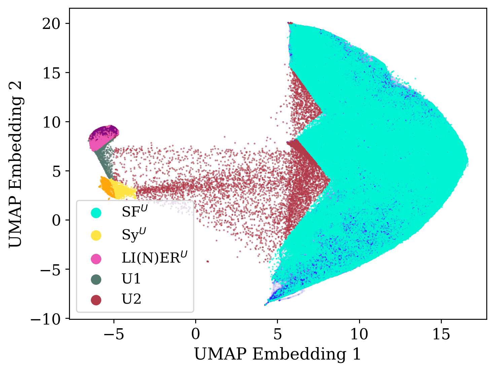
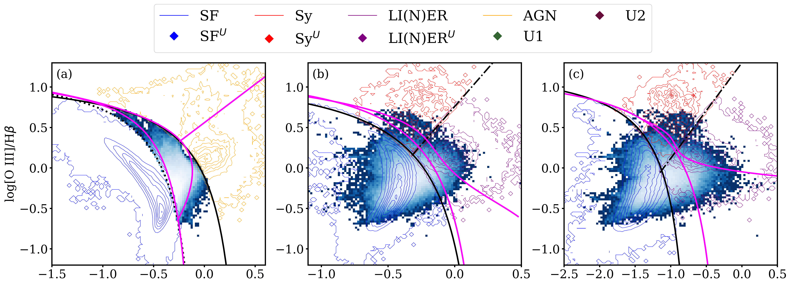
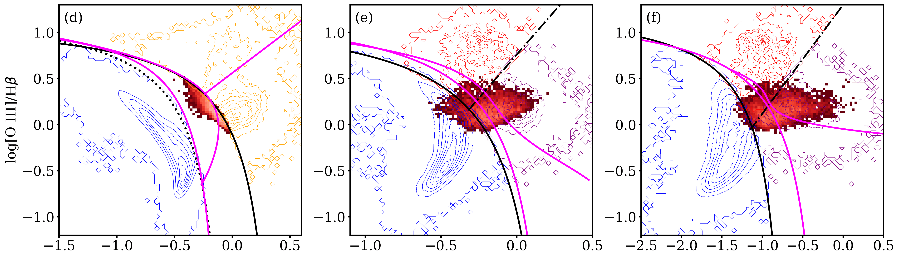
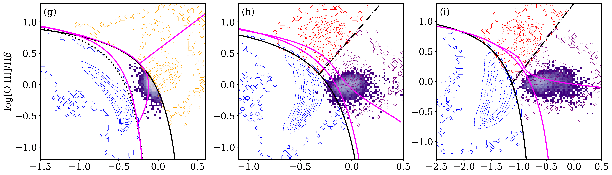
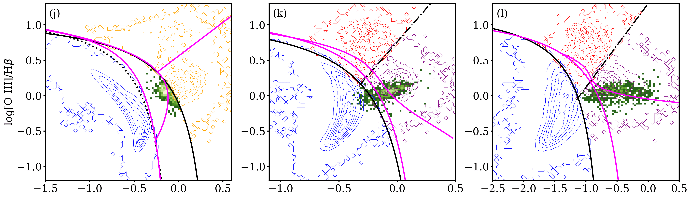
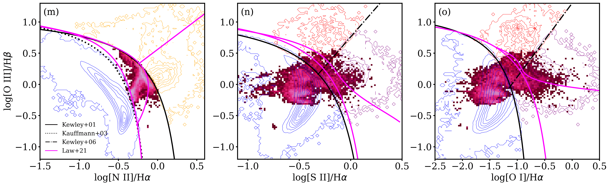
6 الخلاصة
في هذه الدراسة، نبحث استخدام التعلم الآلي غير الخاضع للإشراف لتحسين تصنيف الأطياف الضوئية واكتساب رؤى أعمق في مناطق التأين داخل المجرات. وهدفنا هو تقديم نهج مكمل يعالج حدود تشخيصات BPT التقليدية، التي كثيراً ما تعاني من عدم اتساق الحدود الناتج عن تداخل آثار التأين.
استخدمنا فقط البيانات النقية–أي العناصر الطيفية المكانية المصنفة باتساق على أنها SF أو Sy أو LI(N)ER عبر مخططات BPT الثلاثة كلها–لتدريب نموذج UMAP. وقد هدف هذا النهج إلى تعزيز موثوقية النموذج، لأن إدراج البيانات المركبة والملتبسة قد يُدخل تلوثاً يطمس الحدود بين الفئات ويعقد التصنيف الواضح. ومن خلال استبعاد مثل هذه البيانات غير المؤكدة، خفضنا الضجيج وحققنا نتيجة تصنيف أوضح وأكثر متانة (الشكل 3).
بعد تدريب نموذج UMAP حصراً بالبيانات النقية، اختبرناه على البيانات الملتبسة. ولافتاً، صُنفت كثير من هذه العناصر الطيفية المكانية الملتبسة ضمن مناطق محددة جيداً (الشكل 3)، بدلاً من أن تبقى في الفضاءات غير المؤكدة بين الفئات. ويشير ذلك إلى أن النموذج فعال في تصنيف العناصر الطيفية المكانية التي كانت ملتبسة سابقاً.
يؤكد اختبار العناصر الطيفية المكانية الملتبسة كذلك عدم اتساق طريقة التصنيف التقليدية القائمة على BPT. ففي عدة حالات، أسند UMAP تصنيفات إلى العناصر الطيفية المكانية تعارضت مع الحدود التي وضعتها دراسات سابقة، مما يؤكد حدود الاعتماد فقط على منحنيات BPT المعرفة مسبقاً، ويبرز قدرة النهج المستندة إلى البيانات على كشف التناقضات في هذه التشخيصات. وبناءً على ذلك، نقدم معادلات حدودية جديدة لتوفير إطار تصنيف أدق، مانحين القراء إرشاداً لمن يريدون تصنيف بياناتهم (انظر الملحق A).
تتمثل نتيجة إضافية لهذه الدراسة في ظهور ثنائية محتملة ضمن جمهرة LI(N)ERU. وكما يبين الصف الثالث من الشكل 5، تبدو العناصر الطيفية المكانية المصنفة على أنها LI(N)ERU منقسمة إلى مجموعتين في مخطط [N II]-BPT: تقع إحداهما أقرب إلى جانب SF من خط الفصل، بينما تميل الأخرى إلى شغل منطقة AGN. ومع أن هذا الفصل قد يعكس تمييزاً بين LIERs وLINERs، فإن التداخل كبير، وتظهر بعض LIERs في جانب AGN. ويدعم هذا الاتجاه تشخيصات أخرى: ففي الشكل 6، تُظهر العناصر الطيفية المكانية التي يُحتمل أن تقابل LIERs عروض خطوط H أضيق، بينما تعرض تلك التي يُحتمل أن تقابل LINERs ملامح أعرض. وإضافة إلى ذلك، يكشف الشكل 7 أن LIERs تميل إلى لمعانات [OIII] أخفض، وتقع عند أنصاف أقطار أكبر عن مركز المجرة ( أعلى) مقارنة بـ LINERs. وبينما يستمر التداخل في مخطط [S II]-BPT، تُظهر نسب [O I]/H
أضيق، بينما تعرض تلك التي يُحتمل أن تقابل LINERs ملامح أعرض. وإضافة إلى ذلك، يكشف الشكل 7 أن LIERs تميل إلى لمعانات [OIII] أخفض، وتقع عند أنصاف أقطار أكبر عن مركز المجرة ( أعلى) مقارنة بـ LINERs. وبينما يستمر التداخل في مخطط [S II]-BPT، تُظهر نسب [O I]/H اتجاهاً أولياً مع شغل LIERs مناطق مرتفعة قليلاً. غير أننا نلاحظ أن انبعاث LIER يمكن أن يمتد أيضاً إلى جانب AGN من مخطط [N II]-BPT. وتشير هذه النتائج إلى أن [N II]-BPT، عند دمجه مع المعلومات الحركية والمكانية، قد يوفر محوراً واعداً للتمييز بين مصادر التأين المنخفض المختلفة. ويمكن لدراسات مستقبلية تدمج تشخيصات متعددة الأبعاد—مثل [O I]/H
اتجاهاً أولياً مع شغل LIERs مناطق مرتفعة قليلاً. غير أننا نلاحظ أن انبعاث LIER يمكن أن يمتد أيضاً إلى جانب AGN من مخطط [N II]-BPT. وتشير هذه النتائج إلى أن [N II]-BPT، عند دمجه مع المعلومات الحركية والمكانية، قد يوفر محوراً واعداً للتمييز بين مصادر التأين المنخفض المختلفة. ويمكن لدراسات مستقبلية تدمج تشخيصات متعددة الأبعاد—مثل [O I]/H ونصف القطر الفعال—أن تقدم تفسيراً فيزيائياً أوضح لجمهرة LI(N)ER وأن تزيد تنقيح تصنيفها. وإذا استطاع النموذج تمييز هذه الفروق الدقيقة بدقة وتحديد الفيزياء الكامنة على نحو صحيح، فقد يتيح فهماً أعمق لكل منطقة تأين داخل المجرة. ويمكن لهذا النهج أن يكمل مخططات BPT التقليدية، مقدماً طريقة أوضح وأكثر فعالية لتحليل مناطق التأين المجرية وفتح فرص بحثية جديدة.
ونصف القطر الفعال—أن تقدم تفسيراً فيزيائياً أوضح لجمهرة LI(N)ER وأن تزيد تنقيح تصنيفها. وإذا استطاع النموذج تمييز هذه الفروق الدقيقة بدقة وتحديد الفيزياء الكامنة على نحو صحيح، فقد يتيح فهماً أعمق لكل منطقة تأين داخل المجرة. ويمكن لهذا النهج أن يكمل مخططات BPT التقليدية، مقدماً طريقة أوضح وأكثر فعالية لتحليل مناطق التأين المجرية وفتح فرص بحثية جديدة.
تتيح الطريقة الجديدة تحديد السلوكيات الغريبة في العناصر الطيفية المكانية منفردة، كاشفة رؤى ربما كان مخطط BPT التقليدي سيفوتها. ومن خلال دمج معاملات فيزيائية إضافية، حددنا العناصر الطيفية المكانية من فئة SFU ذات خطوط انبعاث H عريضة تقع بعيداً عن مركز المجرة. وكشف فحص إضافي أن هذه العناصر الطيفية المكانية نشأت من مجرة تخضع لاندماج (انظر الملحق B)، مما يبرهن فعالية الطريقة في كشف سلوكيات معقدة لم تكن ظاهرة باستخدام تصنيف BPT وحده.
عريضة تقع بعيداً عن مركز المجرة. وكشف فحص إضافي أن هذه العناصر الطيفية المكانية نشأت من مجرة تخضع لاندماج (انظر الملحق B)، مما يبرهن فعالية الطريقة في كشف سلوكيات معقدة لم تكن ظاهرة باستخدام تصنيف BPT وحده.
تدعم مرونة UMAP إدراج معاملات جديدة، مما يتيح مزيداً من التنقيح والقابلية للتوسع. وسيهدف العمل المستقبلي إلى إدماج متغيرات إضافية، مثل نسب خطوط انبعاث أخرى (مثلاً [O II]/[O III]) أو معاملات حركية (مثل تشتتات السرعة) لتحسين تدريب النموذج. ومن الضروري اختيار هذه المعاملات استناداً إلى مبادئ فيزيائية راسخة لتجنب تعقيد تفسير الفيزياء الكامنة. وتمثل قابلية طرائق التعلم الآلي للتوسع ميزة رئيسية، إذ يمكن أن تقدم تصنيفات أدق مع زيادة البيانات الرصدية. غير أن اختيار العينة بعناية يظل حاسماً لمنع فرط الملاءمة والحفاظ على قدرة النموذج على التعامل مع بيانات جديدة.
وعلى نطاق أوسع، تكشف نتائجنا أن أوجه عدم الاتساق بين مخططات BPT لا تُحل بالكامل بواسطة مخططات التصنيف التقليدية أو حتى الموسعة، مثل طريقة التشخيص 3D لدى Law et al. (2021)، التي تدمج معلومات حركية. ومع أن مثل هذه الطرائق تمثل تقدماً مهماً، فإنها لا تزال تترك التباسات كبيرة قرب المناطق الحدودية. أما نهجنا القائم على UMAP، فيوفر بديلاً مستنداً إلى البيانات يلتقط العلاقات غير الخطية عبر تشخيصات متعددة، من دون الحاجة إلى حدود معرفة مسبقاً. ويعزز ذلك قيمة تقنيات اختزال الأبعاد في إعادة تقييم مخططات التصنيف الراسخة منذ زمن، ويدفع إلى جهود مستقبلية لدمج كل من نسب خطوط الانبعاث والمعاملات الفيزيائية الإضافية في نماذج موحدة وقابلة للتفسير لبنية التأين.
Appendix A تعريف الحدود للمناطق غير المؤكدة المحددة حديثاً
في هذا الملحق، نعرض المنهجية المتبعة لاشتقاق معادلات عازلة جديدة من نتائج UMAP. ونقدم شرحاً مفصلاً لكيفية استخدام إسقاطات UMAP لتحديد مناطق عازلة جديدة، وكيف توجه هذه المناطق الصياغة اللاحقة لمعادلات العزل.
نبدأ بفحص نتائج تصنيف UMAP. وعادةً ما يتوافق جزء كبير من تصنيفات UMAP توافقاً وثيقاً مع الطرائق التقليدية المعرفة بواسطة Kewley et al. وKewley et al. (2006) وKauffmann et al. (2003) على مخططات BPT. غير أن هناك حالات ملحوظة تنحرف فيها تصنيفات UMAP عن هذه الحدود التشخيصية التقليدية. ولاستكشاف هذه التباينات، نركز تحديداً على العناصر الطيفية المكانية الواقعة خارج الحدود الراسخة، مختارين تلك التي تختلف تصنيفات UMAP لها عن المناطق التقليدية لمزيد من الفحص.
بعد ذلك، بالنسبة إلى العناصر الطيفية المكانية المصنفة ضمن فئات لا تتوافق مع حدود الفصل التقليدية في BPT، نعرف مناطق جديدة ونشتق معادلات عازلة مقابلة لقياس هذه الحدود كمياً. ولتحقيق ذلك، نقيس المسافات من كل عنصر طيفي مكاني إلى خطوط الفصل الراسخة على مخططات BPT. ثم نختار أقرب 95 في المئة، وللمقارنة 99 في المئة، من هذه النقاط لاستبعاد القيم الشاذة، بما يضمن أن المناطق العازلة المعرفة متينة وموثوقة.
ثم نحسب الغلاف المحدب لمجموعة من العناصر الطيفية المكانية المفلترة. والغلاف المحدب هو أصغر حد محدب يحيط بمجموعة من النقاط، مشكلاً “القشرة الخارجية” للبيانات عن طريق وصل النقاط الأبعد. ويضمن ذلك أن أي قطعة مستقيمة بين نقطتين داخل الغلاف تقع بالكامل داخل الحد. ويوفر الغلاف المحدب حداً مفيداً للتجميع والتصنيف، لأنه يمثل الحدود الخارجية لتوزيع البيانات، ويساعد على تعريف مناطق الاهتمام، وتحديد النقاط المتطرفة، ومعالجة العلاقات المكانية بكفاءة. وتُنفذ خوارزمية الغلاف المحدب المستخدمة في هذا التحليل عبر حزمة Python المسماة scipy (Virtanen et al., 2020).
وأخيراً، باستخدام الرؤوس المتحصل عليها من الغلاف المحدب، نستعمل نقاط الحدود لاشتقاق معادلات ملاءمة الحدود. ومع أننا نهدف إلى إبقاء المعادلات بسيطة قدر الإمكان، بتمثيل معظم الحدود بكثيرات حدود من الرتبة الثانية إلى الرابعة، تُستخدم ملاءات أعلى رتبة (حتى الرتبة السادسة) عند الحاجة إلى الدقة. وتُستبعد بعض الرؤوس من هذه العملية لأنها تقع على حدود موجودة مسبقاً عرّفها Kewley et al. وKewley et al. (2006) وKauffmann et al. (2003)، ومن ثم فهي غير مفيدة في توليد معادلات جديدة لملاءمة الحدود.
نقدم هنا معادلات العزل الجديدة المشتقة من الإجراء الموضح أعلاه، كما هو مبين في الشكل 4. ولفحص التوزيع المكاني بمزيد من التفصيل، يقدم الشكل 12 منظراً مكبراً يبرز كيفية ترتيب العناصر الطيفية المكانية بالنسبة إلى الحدود. وفي هذا الشكل، تمثل النقاط الزرقاء 68% من العناصر الطيفية المكانية الأقرب إلى الحدود المعرفة مسبقاً، وتقابل النقاط الخضراء تلك الواقعة بين المئينين 68 و95، بينما تشير النقاط الحمراء إلى العناصر الطيفية المكانية بين المئينين 95 و99. أما نسبة 1% المتبقية من العناصر الطيفية المكانية، وهي الأبعد عن منحنيات الفصل، فتُعرض باللون الأسود. وكما في الشكل 4، تشير الخطوط المتقطعة الليمونية والبنية في الشكل 12 أيضاً إلى معادلات العزل المشتقة من UMAP التي تحيط بـ 95% و99% من العناصر الطيفية المكانية، على التوالي. غير أن العناصر الطيفية المكانية من فئة SyU في مخطط [N II]-BPT لا تمتد بما يكفي خارج منطقة AGN المصنفة لتعريف منحنيات عازلة. ومع ذلك، ندرج العناصر الطيفية المكانية من فئة SyU في الشكل للوضوح والاكتمال.
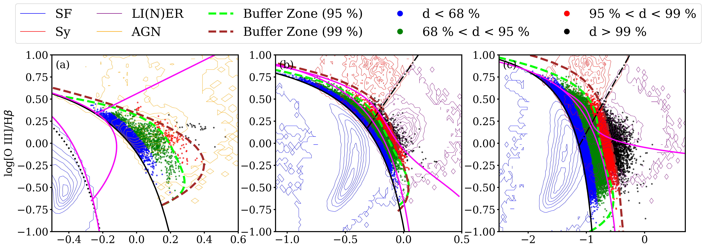
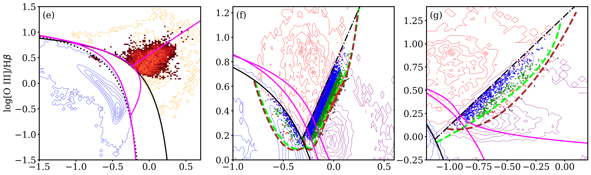
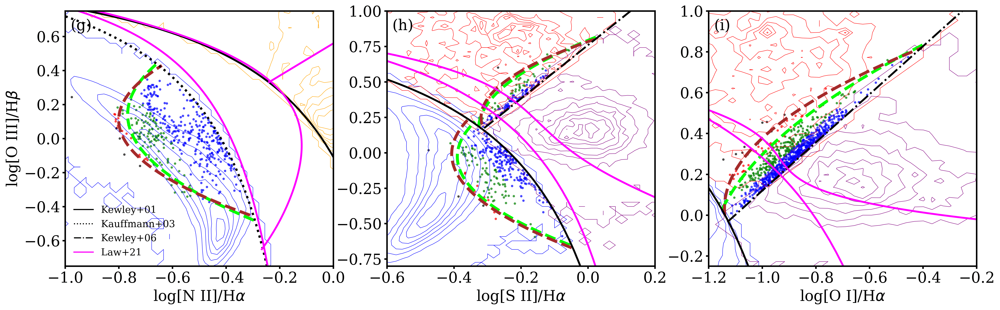
A.1 معادلات عازلة تحيط بـ 95% من العناصر الطيفية المكانية
بالنسبة إلى SFU التي لا تقع في مناطق SF على مخططات BPT:
بالنسبة إلى SyU الواقعة في مناطق LI(N)ER على مخططات BPT:
بالنسبة إلى LI(N)ERU التي لا تقع في مناطق LI(N)ER على مخططات BPT:
A.2 معادلات عازلة تحيط بـ 99% من العناصر الطيفية المكانية
بالنسبة إلى SFU التي لا تقع في مناطق SF على مخططات BPT:
بالنسبة إلى SyU الواقعة في مناطق LI(N)ER على مخططات BPT:
بالنسبة إلى LI(N)ERU التي لا تقع في مناطق LI(N)ER على مخططات BPT:
Appendix B مثال على تطبيق هذا التشخيص: دراسة حالة لمجرة مندمجة
في القسم 5.1، نستكشف إمكانية دراسة عناصر طيفية مكانية محددة تُظهر سلوكاً غريباً باستخدام هذه الطريقة التشخيصية. وعلى وجه الخصوص، نركز على العناصر الطيفية المكانية من فئة SFU الواقعة في منطقة AGN من مخطط [N II]-BPT. وكما نوقش سابقاً، يظهر نمط حيث تقابل خطوط انبعاث H الأعرض عناصر طيفية مكانية موضوعة أعمق داخل منطقة SF من مخطط [S II]-BPT. ويُلاحظ اتجاه مشابه في أنصاف أقطار العناصر الطيفية المكانية: فكلما ابتعدت عن مركز المجرة ظهرت أعمق داخل منطقة SF من مخطط [S II]-BPT. وبناءً على هذه الملاحظات، اخترنا العناصر الطيفية المكانية التي تحقق المعايير الآتية: . وبعد الترشيح، اختير 57 من العناصر الطيفية المكانية؛ 56 من هذه العناصر الطيفية المكانية من MaNGA ID ’1-614567،’ والواحدة المتبقية من ’1-43214.’
الأعرض عناصر طيفية مكانية موضوعة أعمق داخل منطقة SF من مخطط [S II]-BPT. ويُلاحظ اتجاه مشابه في أنصاف أقطار العناصر الطيفية المكانية: فكلما ابتعدت عن مركز المجرة ظهرت أعمق داخل منطقة SF من مخطط [S II]-BPT. وبناءً على هذه الملاحظات، اخترنا العناصر الطيفية المكانية التي تحقق المعايير الآتية: . وبعد الترشيح، اختير 57 من العناصر الطيفية المكانية؛ 56 من هذه العناصر الطيفية المكانية من MaNGA ID ’1-614567،’ والواحدة المتبقية من ’1-43214.’
يعرض الشكل 13 العناصر الطيفية المكانية الـ 57 المختارة من فئة SFU التي تحقق هذه المعايير. وكما هو متوقع، تبقى الاتجاهات المرصودة متسقة: فإن العناصر الطيفية المكانية ذات خطوط انبعاث H الأعرض تقع أعمق داخل منطقة SF في مخطط [S II]-BPT، وتقع أبعد عن مركز المجرة. ويشير موضعها بعيداً عن المركز إلى أن هذه العناصر الطيفية المكانية لا تتأثر بقوة بنشاط AGN. وإضافة إلى ذلك، يدل لمعان [O III] المنخفض نسبياً فيها على أن نشاط تكوّن النجوم العالي وحده قد لا يفسر الرصود تفسيراً كاملاً، مما يوحي بأن عمليات أخرى قد تكون فاعلة. وينشأ شاذ متطرف واحد، يقع عند الغلاف العلوي لتوزيعي [N II]- و[S II]-BPT وعند الحافة اليسرى من لوحة [O I]-BPT، من مجرة مختلفة، MaNGA 1-43214.
الأعرض تقع أعمق داخل منطقة SF في مخطط [S II]-BPT، وتقع أبعد عن مركز المجرة. ويشير موضعها بعيداً عن المركز إلى أن هذه العناصر الطيفية المكانية لا تتأثر بقوة بنشاط AGN. وإضافة إلى ذلك، يدل لمعان [O III] المنخفض نسبياً فيها على أن نشاط تكوّن النجوم العالي وحده قد لا يفسر الرصود تفسيراً كاملاً، مما يوحي بأن عمليات أخرى قد تكون فاعلة. وينشأ شاذ متطرف واحد، يقع عند الغلاف العلوي لتوزيعي [N II]- و[S II]-BPT وعند الحافة اليسرى من لوحة [O I]-BPT، من مجرة مختلفة، MaNGA 1-43214.
يعرض الشكل 14 صورة SDSS لـ MaNGA 1-614567، التي تُظهر بصمات واضحة لتفاعل وربما اندماج. وتشير معاينة أطياف MaNGA لـ 1-614567 إلى مصدر نووي من النوع 1 (شبيه بـ NLSy1) له مكونات بالمر عريضة ولامعة. ويمكن لدالة انتشار النقطة (PSF) أن تنشر هذا الضوء النووي إلى العناصر الطيفية المكانية المجاورة، موسعة H اصطناعياً خارج النواة. ويوفر ذلك بديلاً عن الصدمات لتفسير H
اصطناعياً خارج النواة. ويوفر ذلك بديلاً عن الصدمات لتفسير H المرتفع في بعض العناصر الطيفية المكانية من فئة SFU. وفي مثل هذه الحالات، نتوقع أن تتسع خطوط بالمر تفضيلياً، في حين ينبغي أن يؤثر التوسع بفعل الصدمات في خطوط بالمر والخطوط المحظورة معاً؛ لذلك يجب التعامل بحذر مع التفسيرات القائمة على تشتت H
المرتفع في بعض العناصر الطيفية المكانية من فئة SFU. وفي مثل هذه الحالات، نتوقع أن تتسع خطوط بالمر تفضيلياً، في حين ينبغي أن يؤثر التوسع بفعل الصدمات في خطوط بالمر والخطوط المحظورة معاً؛ لذلك يجب التعامل بحذر مع التفسيرات القائمة على تشتت H وحده ما لم تدعمها اتساعات مماثلة في، مثلاً، [O III] أو [S II].
وحده ما لم تدعمها اتساعات مماثلة في، مثلاً، [O III] أو [S II].
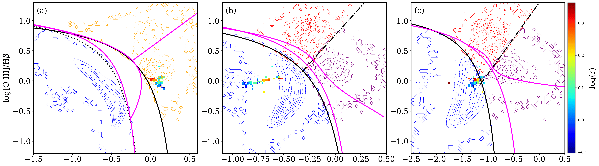
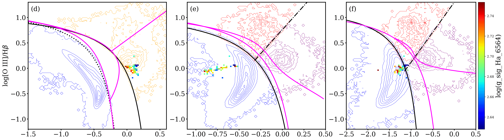
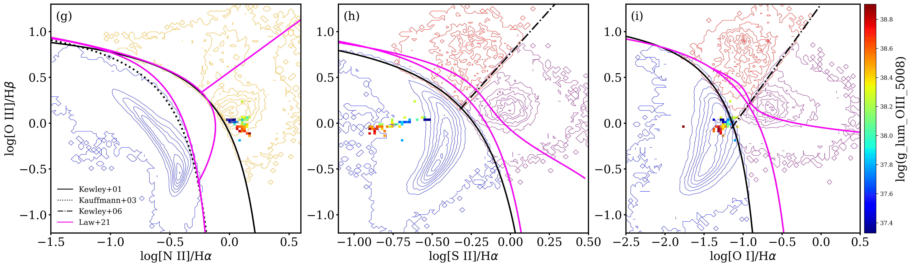
 (الوسط)، ولمعان [O III] (أسفل) للعناصر الطيفية المكانية المختارة من فئة SFU. وينشأ أعلى عنصر طيفي مكاني في مخططي [N II]- و[S II]-BPT، وكذلك العنصر الطيفي المكاني الأيسر في مخطط [O I]-BPT، من مجرة مختلفة، MaNGA ID ‘1-43214،’ بينما تنتمي العناصر الطيفية المكانية المتبقية إلى MaNGA ID ‘1-614567.’
(الوسط)، ولمعان [O III] (أسفل) للعناصر الطيفية المكانية المختارة من فئة SFU. وينشأ أعلى عنصر طيفي مكاني في مخططي [N II]- و[S II]-BPT، وكذلك العنصر الطيفي المكاني الأيسر في مخطط [O I]-BPT، من مجرة مختلفة، MaNGA ID ‘1-43214،’ بينما تنتمي العناصر الطيفية المكانية المتبقية إلى MaNGA ID ‘1-614567.’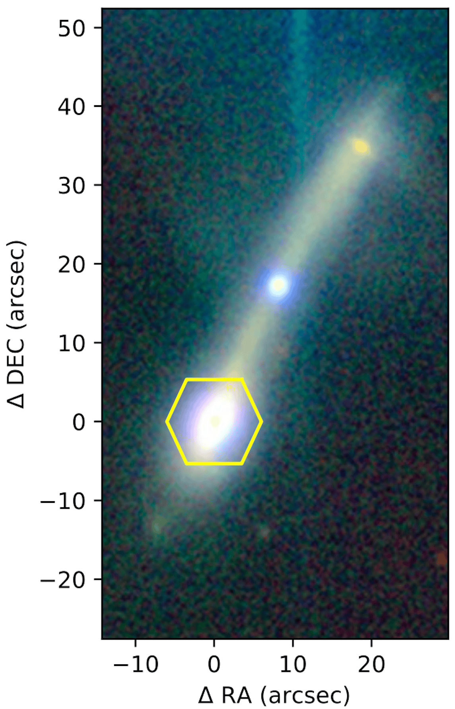
References
- Classifying the full SDSS-IV MaNGA Survey using optical diagnostic diagrams: Presentation of AGN catalogs in flexible apertures. A&A 674, pp. A85. External Links: Document, 2302.08519 Cited by: §1.
- Starbursting [O III] emitters and quiescent [C II] emitters in the reionization era. MNRAS 498 (4), pp. 5541–5556. External Links: Document, 2001.01853 Cited by: §4.3.3.
- The Astropy Project: Sustaining and Growing a Community-oriented Open-source Project and the Latest Major Release (v5.0) of the Core Package. 935 (2), pp. 167. External Links: Document, 2206.14220 Cited by: منطقة الخطر: إنشاء مناطق عازلة لتحسين التصنيف في مخططات BPT.
- CLASSIFICATION parameters for the emission-line spectra of extragalactic objects. 93 (551), pp. 5. External Links: ISSN 1538-3873 0004-6280, Document, Link Cited by: §1, §1.
- SDSS IV MaNGA - spatially resolved diagnostic diagrams: a proof that many galaxies are LIERs. MNRAS 461 (3), pp. 3111–3134. External Links: Document, 1605.07189 Cited by: §4.3.2, §5.1.
- The data analysis pipeline for the sdss-iv manga ifu galaxy survey: emission-line modeling. 158 (4), pp. 160. External Links: ISSN 1538-3881 0004-6256, Document, Link Cited by: §2.1, §2.2.1.
- Probabilistic Autoencoder. arXiv e-prints, pp. arXiv:2006.05479. External Links: Document, 2006.05479 Cited by: §1.
- OVERVIEW of the sdss-iv manga survey: mapping nearby galaxies at apache point observatory. 798 (1), pp. 7. External Links: ISSN 0004-637X, Document, Link Cited by: §1, §2.1.
- A machine-learning approach to predict missing flux densities in multiband galaxy surveys. 942 (2), pp. 91. External Links: ISSN 0004-637X, Document, Link Cited by: §1.
- Uncloaking hidden repeating fast radio bursts with unsupervised machine learning. 509 (1), pp. 1227–1236. External Links: ISSN 0035-8711, Document, Link Cited by: §1.
- A comprehensive classification of galaxies in the Sloan Digital Sky Survey: how to tell true from fake AGN?. MNRAS 413 (3), pp. 1687–1699. External Links: Document, 1012.4426 Cited by: §1, §5.1.
- The sami galaxy survey: the third and final data release. 505 (1), pp. 991–1016. External Links: ISSN 0035-8711, Document, Link Cited by: §1.
- Separating line emission from star formation, shocks, and AGN ionization in NGC 1068. MNRAS 487 (3), pp. 4153–4168. External Links: Document, 1906.07907 Cited by: §1, §4.3.
- [14] THE manga integral field unit fiber feed system for the sloan 2.5 m telescope. 149 (2), pp. 77. Cited by: §2.1.
- The 2.5 m telescope of the sloan digital sky survey. 131 (4), pp. 2332. External Links: ISSN 1538-3881 0004-6256, Document, Link Cited by: §2.1.
- Array programming with NumPy. 585 (7825), pp. 357–362. External Links: Document, Link Cited by: منطقة الخطر: إنشاء مناطق عازلة لتحسين التصنيف في مخططات BPT.
- Beyond bpt: a new multidimensional diagnostic diagram for classifying power sources tested using the sami galaxy survey. 954 (1), pp. 77. Note: Q0ea1 Times Cited:1 Cited References Count:62 External Links: ISSN 0004-637x, Document, Link Cited by: §1, §4.3, §4.3.
- The host galaxies of active galactic nuclei. 346, pp. 1055–1077. External Links: ISSN 0035-8711, Document, Link Cited by: Appendix A, Appendix A, §1, §1, §1, Figure 1, §2.2.1, §2.2.1, §2.2.1, Table 1, Table 3, §4.2, §4.3.3, §5.2.
- STAR formation in galaxies along the hubble sequence. 36 (Volume 36, 1998), pp. 189–231. External Links: ISSN 1545-4282, Document, Link Cited by: §1.
- [20] Theoretical modeling of starburst galaxies. 556 (1), pp. 121. Cited by: Appendix A, Appendix A, §1, §1, Figure 1, §2.2.1, §2.2.1, §2.2.1, §2.2.1, Table 1, Table 3, §4.3.1, §5.2.
- Theoretical Evolution of Optical Strong Lines across Cosmic Time. ApJ 774 (2), pp. 100. External Links: Document, 1307.0508 Cited by: §1.
- The host galaxies and classification of active galactic nuclei. 372 (3), pp. 961–976. External Links: ISSN 0035-8711, Document, Link Cited by: Appendix A, Appendix A, §1, §1, §1, Figure 1, Figure 2, §2.2.1, §2.2.1, §2.2.1, §2.2.1, Table 1, Table 3, §4.2, §5.2.
- The Cosmic BPT Diagram: Confronting Theory with Observations. ApJ 774 (1), pp. L10. External Links: Document, 1307.0514 Cited by: §1.
- Understanding galaxy evolution through emission lines. 57 (Volume 57, 2019), pp. 511–570. External Links: ISSN 1545-4282, Document, Link Cited by: §1.
- Probing the ionization structure of the narrow-line region in the seyfert 1 galaxy ngc 4151. 679 (2), pp. 1128. External Links: ISSN 0004-637X, Document, Link Cited by: §5.1.
- Indicators of Intrinsic Active Galactic Nucleus Luminosity: A Multi-wavelength Approach. ApJ 720 (1), pp. 786–810. External Links: Document, 1007.0900 Cited by: §4.3.3.
- THE data reduction pipeline for the sdss-iv manga ifu galaxy survey. 152 (4), pp. 83. External Links: ISSN 1538-3881 0004-6256, Document, Link Cited by: §2.1.
- SDSS-IV MaNGA: Refining Strong Line Diagnostic Classifications Using Spatially Resolved Gas Dynamics. ApJ 915 (1), pp. 35. External Links: Document, 2011.06012 Cited by: §1, Figure 2, §2.2.1, §2.2.1, Table 2, Table 4, §4.2, §4.3.1, §4.3, §6.
- [29] SDSS-iv manga: modeling the spectral line-spread function to subpercent accuracy. 161 (2), pp. 52. Cited by: §1, §2.1, §2.2.1.
- [30] OBSERVING strategy for the sdss-iv/manga ifu galaxy survey. 150 (1), pp. 19. Cited by: §2.1.
- MAPPING seyfert and liner excitation modes in the inner kpc of ngc 3393. 829 (1), pp. 46. External Links: ISSN 0004-637X, Document, Link Cited by: §1.
- Hdbscan: hierarchical density based clustering. 2 (11). External Links: Document Cited by: منطقة الخطر: إنشاء مناطق عازلة لتحسين التصنيف في مخططات BPT, §3.2.
- UMAP: Uniform Manifold Approximation and Projection for Dimension Reduction. pp. arXiv:1802.03426. External Links: Document, 1802.03426 Cited by: منطقة الخطر: إنشاء مناطق عازلة لتحسين التصنيف في مخططات BPT, §1, §3.1.
- Autoencoding Galaxy Spectra. I. Architecture. AJ 166 (2), pp. 74. External Links: Document, 2211.07890 Cited by: §1.
- Astrophysics of gaseous nebulae and active galactic nuclei. Cited by: §1.
- Pandas-dev/pandas: pandas External Links: Document, Link Cited by: منطقة الخطر: إنشاء مناطق عازلة لتحسين التصنيف في مخططات BPT.
- Reconstructing and Classifying SDSS DR16 Galaxy Spectra with Machine-Learning and Dimensionality Reduction Algorithms. In Compendium of Undergraduate Research in Astronomy and Space Science, J. B. Jensen, J. Barnes, and B. Wardell (Eds.), Astronomical Society of the Pacific Conference Series, Vol. 525, pp. 67. External Links: Document, 2211.11783 Cited by: §1.
- Dimensionality Reduction of SDSS Spectra with Variational Autoencoders. AJ 160 (1), pp. 45. External Links: Document, 2002.10464 Cited by: §1.
- Galaxy-wide Shocks in Late-merger Stage Luminous Infrared Galaxies. ApJ 734 (2), pp. 87. External Links: Document, 1104.1177 Cited by: §1, §4.3.2, §4.3.2, §5.1.
- Composite Spectra in Merging U/LIRGs Caused by Shocks. ApJ 781 (1), pp. L12. External Links: Document, 1310.3441 Cited by: §4.3.2, §5.1.
- Application of dimensionality reduction and clustering algorithms for the classification of kinematic morphologies of galaxies. 671. External Links: Link Cited by: §1.
- A graph-based spectral classification of type ii supernovae. 44, pp. 100715. External Links: ISSN 2213-1337, Document, Link Cited by: §1.
- [43] CALIFA, the calar alto legacy integral field area survey. i. survey presentation. Astronomy and AstrophysicsMonthly Notices of the Royal Astronomical SocietyAnnual Review of Astronomy and AstrophysicsJournal of Machine Learning ResearchNature MethodsThe Astrophysical JournalNatureApJThe Journal of Open Source SoftwareThe Astrophysical Journal Supplement SeriesMonthly Notices of the Royal Astronomical SocietyMonthly Notices of the Royal Astronomical SocietyThe Astrophysical JournalThe Astronomical JournalThe Astronomical JournalThe Astronomical JournalThe Astronomical JournalThe Astronomical JournalThe Astronomical JournalThe Astronomical JournalThe Astronomical JournalThe Astronomical JournalThe Astrophysical JournalThe Astrophysical JournalAnnual Review of Astronomy and AstrophysicsMonthly Notices of the Royal Astronomical SocietyMonthly Notices of the Royal Astronomical SocietyPublications of the Astronomical Society of the PacificMonthly Notices of the Royal Astronomical SocietyMonthly Notices of the Royal Astronomical SocietyMonthly Notices of the Royal Astronomical SocietyThe Astrophysical JournalAstronomy and ComputingA&ASAstrophysical JournalAstrophysical JournalarXiv e-printsApJQJRASNatMNRASAJA&AA&ASAJApJRev. Mexicana Astron. Astrofis. 538, pp. A8. Cited by: §1.
- Observational evidence for agn feedback in early-type galaxies. 382 (4), pp. 1415–1431. External Links: ISSN 0035-8711, Document, Link Cited by: §1.
- THE multi-object, fiber-fed spectrographs for the sloan digital sky survey and the baryon oscillation spectroscopic survey. 146 (2), pp. 32. External Links: ISSN 1538-3881 0004-6256, Document, Link Cited by: §2.1.
- Semi-empirical analysis of sloan digital sky survey galaxies – iii. how to distinguish agn hosts. 371 (2), pp. 972–982. External Links: ISSN 0035-8711, Document, Link Cited by: §1.
- The Biases of Optical Line-Ratio Selection for Active Galactic Nuclei and the Intrinsic Relationship between Black Hole Accretion and Galaxy Star Formation. ApJ 811 (1), pp. 26. External Links: Document, 1501.02801 Cited by: §1.
- Visualizing data using t-sne. 9 (86), pp. 2579–2605. External Links: Link Cited by: §1.
- Spectral classification of emission-line galaxies. 63, pp. 295. External Links: ISSN 0067-0049, Document, Link Cited by: §1.
- SciPy 1.0: Fundamental Algorithms for Scientific Computing in Python. 17, pp. 261–272. External Links: Document Cited by: Appendix A, منطقة الخطر: إنشاء مناطق عازلة لتحسين التصنيف في مخططات BPT.
- Galaxy Emission Line Classification Using Three-dimensional Line Ratio Diagrams. ApJ 793 (2), pp. 127. External Links: Document, 1406.5186 Cited by: §1.
- [52] The data analysis pipeline for the sdss-iv manga ifu galaxy survey: overview. 158 (6), pp. 231. Cited by: §2.1, §2.2.1.
- [53] SDSS-iv/manga: spectrophotometric calibration technique. 151 (1), pp. 8. Cited by: §2.1.
- Powerful t-sne technique leading to clear separation of type-2 agn and h ii galaxies in bpt diagrams. 905 (2), pp. 97. Note: Pg5xh Times Cited:18 Cited References Count:40 External Links: ISSN 0004-637x, Document, Link Cited by: §1.